Unidad 2 Correlaciones y regresiones múltiples
Natalia Morandeira1
Instituto de Investigación e Ingeniería Ambiental (CONICET-UNSAM)
2.1 Introducción
En esta Unidad vamos a abordar análisis de correlación y regresiones múltiples (modelos lineales). Las correlaciones son análisis útiles para explorar nuestros datos y para evaluar si dos variables están asociadas positivamente o negativamente. Por otro lado, en el caso de una regresión simple, tenemos una variable respuesta (o dependiente) y una variable explicativa (o independiente). Un análisis de regresión múltiple es muy adecuado cuando hemos medido muchas variables, por ejemplo, si tenemos una variable respuesta y muchas posibles variables explicativas. Nos interesa conocer cuál o cuáles variables explican la variación de la variable respuesta, y elegir el mejor modelo.
En el marco de análisis limnológicos, una situación común es tener una variable respuesta medida en cuerpos de agua y múltiples variables que hipotetizamos que pueden explicar su variación. Entre las variables respuestas, podríamos tener (de acuerdo al objetivo de nuestro estudio) la abundancia, biomasa o diversidad de especies de un dado taxón o de grupos funcionales; o la concentración de un agroquímico; o incluso variables físico-químicas del cuerpo de agua que podrían depender de otro factor. Entre las variables respuestas, es posible que tengamos variables físico-químicas, características morfométricas de la laguna, usos de suelo del entorno, características de la cuenca, abundancia de otro taxón que interactúe con nuestra especie de interés, etc. Nos puede interesar en primer lugar analizar si están correlacionadas nuestras potenciales variables explicativas. Luego, podemos intentar ajustar un buen modelo que explique cómo varía nuestra variable respuesta en función de varias variables explicativas. Ese es el camino que recorreremos en esta Unidad.
2.2 Caso de estudio
El sitio de estudio es la turbera de Rancho Hambre (Tierra del Fuego, Argentina), en donde entre octubre de 2009 y abril de 2010 se realizaron muestreos en lagunas (ver artículo de Quiroga et al. 2017, y la tesis doctoral de María Victoria Quiroga (FCEN-UBA)). En cinco lagunas (RH1 a RH5), se realizaron muestreos estacionales (octubre, diciembre, febrero y abril), es decir, tenemos un total de 20 observaciones. Contamos con dos tablas de datos:
Datos limnológicos físicoquímicos. Los datos corresponden a los sitios de muestreo de orilla de los cuerpos de agua. Los parámetros limnológicos fueron estimados según lo descripto en la sección Sampling regime, physical-chemical analyses de Materiales y Métodos en Quiroga et al. (2017). Los datos físicoquímicos están disponibles en el repositorio digital de CONICET. Consideraremos a las variables medidas como variables explicativas: pH, conductividad, oxígeno disuelto, dureza total, DOC, DIN, nitrógeno total, DRP, fósforo total, ag(440), SUVA254 e índice MS; todas ellas variables numéricas. Por otro lado tenemos variables categóricas que discutiremos cómo considerar: la laguna (cinco niveles) y la fecha de muestreo (cuatro niveles).
Biomasa de morfotipos bacterianos. La biomasa de bacterias heterótrofas se estimó utilizando microscopía de epifluorescencia y análisis de imágenes. Para detalles ver sección Bacterioplankton morphotypes de Materiales y Métodos en Quiroga et al. (2017). Los datos de morfotipos bacterianos están disponibles en el repositorio digital de CONICET. En la tabla se cuenta con la biomasa de seis morfotipos bacterianos distintos. Podemos tomar a la biomasa de cada morfotipo como una variable respuesta por separado, o bien considerar para un primer análisis a la biomasa total de bacterias heterótrofas como la variable a modelar.
2.3 Leer y emprolijar los datos
Siempre debemos mirar nuestra tabla de datos antes de empezar: detectar posibles errores o datos faltantes, retocar los nombres de las variables, agrupar filas y columnas si corresponde, etc. En nuestro caso además tenemos por un lado las variables físico-químicas y por el otro lado las variables biológicas, pero para los análisis es conveniente tener todos los datos en un mismo dataframe.
Empezamos leyendo las bases de datos en R. Es una buena práctica guardar los archivos en una carpeta llamada data, dentro de la carpeta de nuestro proyecto. Tenemos los datos en formato csv en GitHub Limno-con-R/CILCAL2023 RH_abiotic_data.csv y RH_morpho_biomass.csv (son casi iguales a los disponibles en el repositorio CONICET, se cambió un guión bajo por un espacio en una de las tablas). Cargamos los datos indicando que se saltee (skip) la primera fila (¿por qué?).
library(readr)
datos_fq <- read_csv("data/RH_abiotic_data.csv", skip = 1)
datos_bacterias <- read_csv("data/RH_morpho_biomass.csv", skip = 1)Ahora vamos a ver los datos. Recordar o anotar cuántas filas y columnas tiene cada dataframe.
datos_fq## # A tibble: 20 × 16
## ID Pool Site Date pH Conductivity `Dissolved oxig… `Total hardness`
## <chr> <chr> <chr> <chr> <dbl> <dbl> <dbl> <dbl>
## 1 1O RH1 shore Octo… 4.91 13.4 NA 21.2
## 2 2O RH2 shore Octo… 5.52 8.7 NA 46.2
## 3 3O RH3 shore Octo… 4.72 15.2 NA 13.8
## 4 4O RH4 north shore Octo… 5.09 11.8 NA 33.2
## 5 5O RH5 shore Octo… 4.82 5.5 NA 25.8
## 6 1D RH1 shore Dece… 6.39 19.1 11.0 38.5
## 7 2D RH2 shore Dece… 4.75 22.6 11.0 42.1
## 8 3D RH3 shore Dece… 4.67 26.7 11.7 18.9
## 9 4D RH4 north shore Dece… 6.75 25.6 11.7 24.8
## 10 5D RH5 shore Dece… 4.65 23 11.5 20.1
## 11 1F RH1 shore Febr… 5.9 21.4 10.4 39.5
## 12 2F RH2 shore Febr… 5.19 22.6 10.2 34
## 13 3F RH3 shore Febr… 4.66 25.7 10.6 32
## 14 4F RH4 north shore Febr… 6.65 26.8 10.9 36.6
## 15 5F RH5 shore Febr… 4.82 27.2 10.4 24.5
## 16 1A RH1 shore Apri… 7.1 21.4 10.7 25.3
## 17 2A RH2 shore Apri… 4.88 24 11.4 20.3
## 18 3A RH3 shore Apri… 5.4 28.5 10.4 18.8
## 19 4A RH4 north shore Apri… 6.2 28.5 11.2 27.7
## 20 5A RH5 shore Apri… 5.43 27.1 11.2 24.2
## # … with 8 more variables: DOC <dbl>, DIN <dbl>, Total nitrogen <dbl>,
## # DRP <dbl>, Total phosphorus <dbl>, ag(440) <dbl>, SUVA254 <dbl>,
## # MS index <dbl>datos_bacterias## # A tibble: 20 × 10
## ID Pool Site Date Filaments Large_rods Vibrio_shaped Large_cocci
## <chr> <chr> <chr> <chr> <dbl> <dbl> <dbl> <dbl>
## 1 1O RH1 shore Octob… 0 16921 5315 12676
## 2 2O RH2 shore Octob… 1435 5645 2384 7381
## 3 3O RH3 shore Octob… 13307 1597 392 8131
## 4 4O RH4 north shore Octob… 0 8085 3499 7534
## 5 5O RH5 shore Octob… 0 1921 451 15662
## 6 1D RH1 shore Decem… 0 12374 9228 21906
## 7 2D RH2 shore Decem… 0 22924 5933 34663
## 8 3D RH3 shore Decem… 0 12309 3471 46807
## 9 4D RH4 north shore Decem… 44419 76819 19692 44391
## 10 5D RH5 shore Decem… 0 66952 23046 134707
## 11 1F RH1 shore Febru… 3177 6414 7533 22218
## 12 2F RH2 shore Febru… 0 7263 4879 25886
## 13 3F RH3 shore Febru… 3886 9283 1294 17402
## 14 4F RH4 north shore Febru… 5860 54624 20331 33949
## 15 5F RH5 shore Febru… 0 21324 17482 24397
## 16 1A RH1 shore April… 12331 21098 11615 16083
## 17 2A RH2 shore April… 0 6950 4028 22525
## 18 3A RH3 shore April… 0 12394 17281 18608
## 19 4A RH4 north shore April… 0 901 2484 3455
## 20 5A RH5 shore April… 0 7626 3338 17231
## # … with 2 more variables: Small_rods <dbl>, Small_cocci <dbl>Para unir estas tablas en una sola, debemos buscar una variable o columna que sea un indicador único de cada dato, y que sea equivalente en ambas tablas. ¿Cuál les parece que es?
Con ese indicador como nexo, haremos una unión exterior completa o full_join. Esto se debe a que queremos mantener todos los registros de nuestras tablas aunque para alguna laguna –quizás– no hayamos podido medir los parámetros físicoquímicos o no hayamos podido medir la biomasa bacteriana. Para saber más sobre funciones que permiten relacionar conjuntos de datos, recomendamos consultar el capítulo 13. Datos relacionales (en particular 13.4.1. Entendiendo las uniones) en el libro traducido a castellano R para Ciencias de Datos, de Hadley Wickham y Garret Grolemund (2017).
Hacemos la unión e inspeccionamos la tabla (¿cuántas filas y columnas tiene?).
library(tidyverse)datos_RH <- full_join(datos_bacterias, datos_fq, by = "ID")
datos_RH ## # A tibble: 20 × 25
## ID Pool.x Site.x Date.x Filaments Large_rods Vibrio_shaped Large_cocci
## <chr> <chr> <chr> <chr> <dbl> <dbl> <dbl> <dbl>
## 1 1O RH1 shore Octob… 0 16921 5315 12676
## 2 2O RH2 shore Octob… 1435 5645 2384 7381
## 3 3O RH3 shore Octob… 13307 1597 392 8131
## 4 4O RH4 north shore Octob… 0 8085 3499 7534
## 5 5O RH5 shore Octob… 0 1921 451 15662
## 6 1D RH1 shore Decem… 0 12374 9228 21906
## 7 2D RH2 shore Decem… 0 22924 5933 34663
## 8 3D RH3 shore Decem… 0 12309 3471 46807
## 9 4D RH4 north shore Decem… 44419 76819 19692 44391
## 10 5D RH5 shore Decem… 0 66952 23046 134707
## 11 1F RH1 shore Febru… 3177 6414 7533 22218
## 12 2F RH2 shore Febru… 0 7263 4879 25886
## 13 3F RH3 shore Febru… 3886 9283 1294 17402
## 14 4F RH4 north shore Febru… 5860 54624 20331 33949
## 15 5F RH5 shore Febru… 0 21324 17482 24397
## 16 1A RH1 shore April… 12331 21098 11615 16083
## 17 2A RH2 shore April… 0 6950 4028 22525
## 18 3A RH3 shore April… 0 12394 17281 18608
## 19 4A RH4 north shore April… 0 901 2484 3455
## 20 5A RH5 shore April… 0 7626 3338 17231
## # … with 17 more variables: Small_rods <dbl>, Small_cocci <dbl>, Pool.y <chr>,
## # Site.y <chr>, Date.y <chr>, pH <dbl>, Conductivity <dbl>,
## # Dissolved oxigen <dbl>, Total hardness <dbl>, DOC <dbl>, DIN <dbl>,
## # Total nitrogen <dbl>, DRP <dbl>, Total phosphorus <dbl>, ag(440) <dbl>,
## # SUVA254 <dbl>, MS index <dbl>Las variables Pool, Site y Date se repiten en ambas tablas, por eso aparecen como Pool.x y Pool.y (por ejemplo). Dado que son idénticas, tenemos la opción de eliminar estas variables de alguna de las dos tablas, o bien incluirlas como parte de la información de nexo.
datos_RH <- full_join(datos_bacterias, datos_fq, by = c("ID", "Pool", "Site", "Date"))
datos_RH ## # A tibble: 20 × 22
## ID Pool Site Date Filaments Large_rods Vibrio_shaped Large_cocci
## <chr> <chr> <chr> <chr> <dbl> <dbl> <dbl> <dbl>
## 1 1O RH1 shore Octob… 0 16921 5315 12676
## 2 2O RH2 shore Octob… 1435 5645 2384 7381
## 3 3O RH3 shore Octob… 13307 1597 392 8131
## 4 4O RH4 north shore Octob… 0 8085 3499 7534
## 5 5O RH5 shore Octob… 0 1921 451 15662
## 6 1D RH1 shore Decem… 0 12374 9228 21906
## 7 2D RH2 shore Decem… 0 22924 5933 34663
## 8 3D RH3 shore Decem… 0 12309 3471 46807
## 9 4D RH4 north shore Decem… 44419 76819 19692 44391
## 10 5D RH5 shore Decem… 0 66952 23046 134707
## 11 1F RH1 shore Febru… 3177 6414 7533 22218
## 12 2F RH2 shore Febru… 0 7263 4879 25886
## 13 3F RH3 shore Febru… 3886 9283 1294 17402
## 14 4F RH4 north shore Febru… 5860 54624 20331 33949
## 15 5F RH5 shore Febru… 0 21324 17482 24397
## 16 1A RH1 shore April… 12331 21098 11615 16083
## 17 2A RH2 shore April… 0 6950 4028 22525
## 18 3A RH3 shore April… 0 12394 17281 18608
## 19 4A RH4 north shore April… 0 901 2484 3455
## 20 5A RH5 shore April… 0 7626 3338 17231
## # … with 14 more variables: Small_rods <dbl>, Small_cocci <dbl>, pH <dbl>,
## # Conductivity <dbl>, Dissolved oxigen <dbl>, Total hardness <dbl>,
## # DOC <dbl>, DIN <dbl>, Total nitrogen <dbl>, DRP <dbl>,
## # Total phosphorus <dbl>, ag(440) <dbl>, SUVA254 <dbl>, MS index <dbl>Ahora vamos a mejorar los nombres de las columnas. Una buena práctica es elegir siempre el mismo tipo de nomenclatura. Hay varias convenciones pero las más elegidas en el mundo de R son snake y camel. La nomenclatura snake implica usar guiones bajos como separador de palabras y, generalmente, todas las letras en minúscula. La nomenclatura camel implica, en vez de usar guiones, usar a las mayúsculas como indicador de que hay una palabra nueva, y siempre dejar a la primera palabra en minúscula. Si nuestra variable se llama “Fecha de muestreo,” la nomenclatura sería fecha_de_muestreo o fechaDeMuestreo, de acuerdo a la convención elegida.
En la tabla que tenemos, hay una mezcla de criterios: se usan guiones bajos pero a la vez las variables empiezan con mayúscula. Vamos a ajustar. Vamos a pasar todas las variables al formato snake con una función muy útil, que también sirve para nombres de columnas más desprolijos (por ejemplo, si tenemos otros signos de puntuación en los nombres).
library(janitor)datos_RH <- clean_names(datos_RH)
datos_RH ## # A tibble: 20 × 22
## id pool site date filaments large_rods vibrio_shaped large_cocci
## <chr> <chr> <chr> <chr> <dbl> <dbl> <dbl> <dbl>
## 1 1O RH1 shore Octob… 0 16921 5315 12676
## 2 2O RH2 shore Octob… 1435 5645 2384 7381
## 3 3O RH3 shore Octob… 13307 1597 392 8131
## 4 4O RH4 north shore Octob… 0 8085 3499 7534
## 5 5O RH5 shore Octob… 0 1921 451 15662
## 6 1D RH1 shore Decem… 0 12374 9228 21906
## 7 2D RH2 shore Decem… 0 22924 5933 34663
## 8 3D RH3 shore Decem… 0 12309 3471 46807
## 9 4D RH4 north shore Decem… 44419 76819 19692 44391
## 10 5D RH5 shore Decem… 0 66952 23046 134707
## 11 1F RH1 shore Febru… 3177 6414 7533 22218
## 12 2F RH2 shore Febru… 0 7263 4879 25886
## 13 3F RH3 shore Febru… 3886 9283 1294 17402
## 14 4F RH4 north shore Febru… 5860 54624 20331 33949
## 15 5F RH5 shore Febru… 0 21324 17482 24397
## 16 1A RH1 shore April… 12331 21098 11615 16083
## 17 2A RH2 shore April… 0 6950 4028 22525
## 18 3A RH3 shore April… 0 12394 17281 18608
## 19 4A RH4 north shore April… 0 901 2484 3455
## 20 5A RH5 shore April… 0 7626 3338 17231
## # … with 14 more variables: small_rods <dbl>, small_cocci <dbl>, p_h <dbl>,
## # conductivity <dbl>, dissolved_oxigen <dbl>, total_hardness <dbl>,
## # doc <dbl>, din <dbl>, total_nitrogen <dbl>, drp <dbl>,
## # total_phosphorus <dbl>, ag_440 <dbl>, suva254 <dbl>, ms_index <dbl>El nombre de la variable pH quedó un poco raro, lo vamos a cambiar. A continuación se pide el nombre de las columnas de datos_RH, luego específicamente el de la columna 11, y luego lo cambiamos.
colnames(datos_RH)## [1] "id" "pool" "site" "date"
## [5] "filaments" "large_rods" "vibrio_shaped" "large_cocci"
## [9] "small_rods" "small_cocci" "p_h" "conductivity"
## [13] "dissolved_oxigen" "total_hardness" "doc" "din"
## [17] "total_nitrogen" "drp" "total_phosphorus" "ag_440"
## [21] "suva254" "ms_index"colnames(datos_RH)[11]## [1] "p_h"colnames(datos_RH)[11] <- "ph"
colnames(datos_RH)## [1] "id" "pool" "site" "date"
## [5] "filaments" "large_rods" "vibrio_shaped" "large_cocci"
## [9] "small_rods" "small_cocci" "ph" "conductivity"
## [13] "dissolved_oxigen" "total_hardness" "doc" "din"
## [17] "total_nitrogen" "drp" "total_phosphorus" "ag_440"
## [21] "suva254" "ms_index"Finalmente, vamos a agregar una nueva columna con la biomasa total bacteriana. Existen múltiples métodos para hacer esto, vamos a ver dos, uno con la sintaxis base de R y otro con la sintaxis de tidyverse. Para conocer más sobre los tipos de sintaxis de R, recomendamos la hoja de referencia Comparación de sintaxis de R, por Amelia McNamara (traducida al castellano por RLadies).
#Con la sintaxis base
datos_bio_opcion1 <- datos_RH #duplico el dataframe para no sobreescribirlo y comparar los resultados
datos_bio_opcion1$bio_total <- datos_bio_opcion1$filaments + datos_bio_opcion1$large_rods + datos_bio_opcion1$vibrio_shaped + datos_bio_opcion1$large_cocci + datos_bio_opcion1$small_rods + datos_bio_opcion1$small_cocci
datos_bio_opcion1## # A tibble: 20 × 23
## id pool site date filaments large_rods vibrio_shaped large_cocci
## <chr> <chr> <chr> <chr> <dbl> <dbl> <dbl> <dbl>
## 1 1O RH1 shore Octob… 0 16921 5315 12676
## 2 2O RH2 shore Octob… 1435 5645 2384 7381
## 3 3O RH3 shore Octob… 13307 1597 392 8131
## 4 4O RH4 north shore Octob… 0 8085 3499 7534
## 5 5O RH5 shore Octob… 0 1921 451 15662
## 6 1D RH1 shore Decem… 0 12374 9228 21906
## 7 2D RH2 shore Decem… 0 22924 5933 34663
## 8 3D RH3 shore Decem… 0 12309 3471 46807
## 9 4D RH4 north shore Decem… 44419 76819 19692 44391
## 10 5D RH5 shore Decem… 0 66952 23046 134707
## 11 1F RH1 shore Febru… 3177 6414 7533 22218
## 12 2F RH2 shore Febru… 0 7263 4879 25886
## 13 3F RH3 shore Febru… 3886 9283 1294 17402
## 14 4F RH4 north shore Febru… 5860 54624 20331 33949
## 15 5F RH5 shore Febru… 0 21324 17482 24397
## 16 1A RH1 shore April… 12331 21098 11615 16083
## 17 2A RH2 shore April… 0 6950 4028 22525
## 18 3A RH3 shore April… 0 12394 17281 18608
## 19 4A RH4 north shore April… 0 901 2484 3455
## 20 5A RH5 shore April… 0 7626 3338 17231
## # … with 15 more variables: small_rods <dbl>, small_cocci <dbl>, ph <dbl>,
## # conductivity <dbl>, dissolved_oxigen <dbl>, total_hardness <dbl>,
## # doc <dbl>, din <dbl>, total_nitrogen <dbl>, drp <dbl>,
## # total_phosphorus <dbl>, ag_440 <dbl>, suva254 <dbl>, ms_index <dbl>,
## # bio_total <dbl>#Con la sintaxis tidyverse, la cual usa el operador _pipe_ ("la pipa") %>%
datos_bio_opcion2 <- datos_RH %>%
mutate(bio_total = filaments + large_rods + vibrio_shaped + large_cocci + small_rods + small_cocci, .before=filaments)
datos_bio_opcion2## # A tibble: 20 × 23
## id pool site date bio_total filaments large_rods vibrio_shaped
## <chr> <chr> <chr> <chr> <dbl> <dbl> <dbl> <dbl>
## 1 1O RH1 shore October_2009 62653 0 16921 5315
## 2 2O RH2 shore October_2009 29808 1435 5645 2384
## 3 3O RH3 shore October_2009 37357 13307 1597 392
## 4 4O RH4 north shore October_2009 46499 0 8085 3499
## 5 5O RH5 shore October_2009 50321 0 1921 451
## 6 1D RH1 shore December_2009 86432 0 12374 9228
## 7 2D RH2 shore December_2009 147788 0 22924 5933
## 8 3D RH3 shore December_2009 210287 0 12309 3471
## 9 4D RH4 north shore December_2009 366384 44419 76819 19692
## 10 5D RH5 shore December_2009 330544 0 66952 23046
## 11 1F RH1 shore February_2010 77850 3177 6414 7533
## 12 2F RH2 shore February_2010 179175 0 7263 4879
## 13 3F RH3 shore February_2010 127395 3886 9283 1294
## 14 4F RH4 north shore February_2010 186223 5860 54624 20331
## 15 5F RH5 shore February_2010 177152 0 21324 17482
## 16 1A RH1 shore April_2010 101197 12331 21098 11615
## 17 2A RH2 shore April_2010 128935 0 6950 4028
## 18 3A RH3 shore April_2010 174051 0 12394 17281
## 19 4A RH4 north shore April_2010 58439 0 901 2484
## 20 5A RH5 shore April_2010 90498 0 7626 3338
## # … with 15 more variables: large_cocci <dbl>, small_rods <dbl>,
## # small_cocci <dbl>, ph <dbl>, conductivity <dbl>, dissolved_oxigen <dbl>,
## # total_hardness <dbl>, doc <dbl>, din <dbl>, total_nitrogen <dbl>,
## # drp <dbl>, total_phosphorus <dbl>, ag_440 <dbl>, suva254 <dbl>,
## # ms_index <dbl>La ventaja de la segunda opción es que podemos elegir dónde agregar la nueva columna (antes de la columna filaments, por ejemplo). Así que nos quedaremos con esta tabla para los siguientes pasos. De paso, borramos los dataframes que ya no necesitamos.
datos_RH <- datos_bio_opcion2
rm(datos_bio_opcion2)
rm(datos_bio_opcion1)Un último paso es informar que las variables pool y date son categóricas (factores). En el caso de date, además es adecuado ordenar los niveles de los factores, tanto para algunos análisis que consideren el orden de los meses (aquí nos exceden) como para mejorar la forma en que resumimos los resultados en una tabla o en un gráfico.
datos_RH$pool <- factor(datos_RH$pool) #en este caso no indicamos los niveles, ya que el orden alfabético es adecuado
datos_RH$date <- factor(datos_RH$date, levels = c("October_2009", "December_2009", "February_2010", "April_2010"))¡Listo! Podemos empezar con los análisis.
2.4 Correlaciones
Primero vamos a realizar análisis rápidos de todos los pares de variables con la librería GGally.
library(GGally)2.4.1 Entre biomasa de morfotipos bacterianos
Vamos a analizar en primer lugar las variables biológicas, para lo cual generamos un nuevo dataframe que es un subconjunto de los anteriores.
datos_bacterias <- datos_RH[,5:11]
ggpairs(datos_bacterias, title="Correlograma entre la biomasa de morfotipos bacterianos") 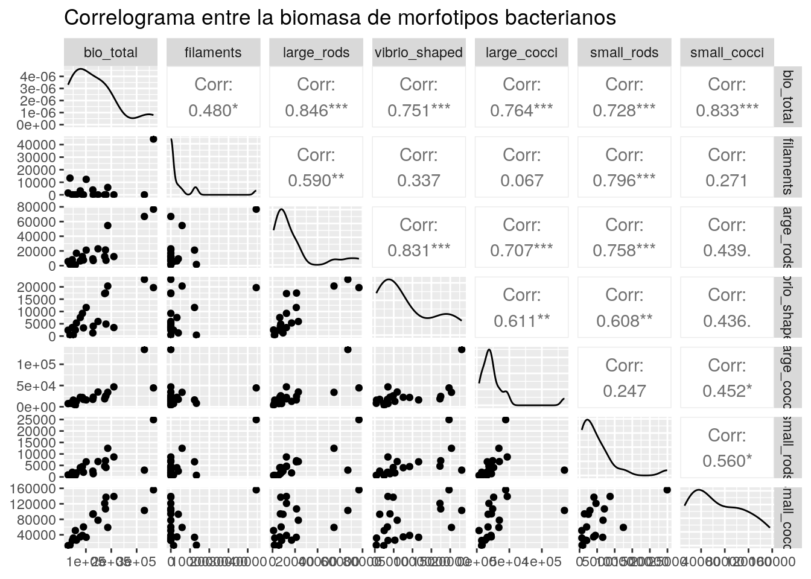 Obtenemos una matriz de gráficos, en la que cada celda expresa la correlacion de un par de variables. En este caso, todas las variables son continuas, por lo que observamos que los gráficos en la parte inferior de la matriz son de dispersión (puntos).
En las diagonales, observamos histogramas suavizados para cada variable. Por ejemplo, comparemos el histograma de la biomasa total.
hist(datos_bacterias$bio_total, breaks=10, col="lightblue", xlab="Biomasa total de bacterias heterótrofas", ylab="Frecuencia", main="")
En la parte superior, se muestra el coeficiente de correlación para cada par de variables y asteriscos indicando su nivel de significancia. Podemos evaluar el par que nos interese con una función, para tener información numérica más detallada.
cor.test(datos_bacterias$vibrio_shaped, datos_bacterias$large_rods)##
## Pearson's product-moment correlation
##
## data: datos_bacterias$vibrio_shaped and datos_bacterias$large_rods
## t = 6.3382, df = 18, p-value = 5.68e-06
## alternative hypothesis: true correlation is not equal to 0
## 95 percent confidence interval:
## 0.6144454 0.9311213
## sample estimates:
## cor
## 0.8310104Aquí observamos que el coeficiente de la correlación de Pearson es r = 0.8310, igual al que observamos en el correlograma. Además obtenemos un intervalo de confianza y un p-valor. Sin embargo, la correlación de Pearson supone que la distribución de las variables es normal. Evaluemos la normalidad de estas dos variables (deberíamos analizarlo para todas).
shapiro.test(datos_bacterias$vibrio_shaped)##
## Shapiro-Wilk normality test
##
## data: datos_bacterias$vibrio_shaped
## W = 0.8493, p-value = 0.005189shapiro.test(datos_bacterias$large_rods)##
## Shapiro-Wilk normality test
##
## data: datos_bacterias$large_rods
## W = 0.71437, p-value = 5.866e-05Dado que se rechaza el supuesto de distribución normal, tenemos dos opciones. La primera es hacer una correlación de Spearman, la cual es adecuada si suponemos que la relación entre las variables es monotónica (las variables siempre crecen o decrecen). La desventaja es que, en la fórmula de cómputo del método, las variables se ordenan en un rango y pasan a ser ordinales. Agregamos a la misma función que el método sea Spearman (por defecto es Pearson, ver la ayuda de la función con ?cor.test). El rho es de 0.8316.
cor.test(datos_bacterias$vibrio_shaped, datos_bacterias$large_rods, method = "spearman")##
## Spearman's rank correlation rho
##
## data: datos_bacterias$vibrio_shaped and datos_bacterias$large_rods
## S = 224, p-value = 2.994e-07
## alternative hypothesis: true rho is not equal to 0
## sample estimates:
## rho
## 0.8315789La segunda opción es hacer una correlación de Pearson por permutaciones. Indicamos entonces el número de permutaciones a generar o dejamos el valor por defecto que es 999. Puede tardar un poco ya que tiene que permutar. El coeficiente de correlación obtenido es de 0.8310.
library(RVAideMemoire) #Si no encuentran esta librería en las computadoras del curso, pueden probar este paso en sus hogares. En caso de problemas para instalarla, instalar primero la librería mixOmics con estas instrucciones: http://www.bioconductor.org/packages/release/bioc/html/mixOmics.html perm.cor.test(datos_bacterias$vibrio_shaped, datos_bacterias$large_rods, progress=FALSE)##
## Pearson's product-moment correlation - Permutation test
##
## data: datos_bacterias$vibrio_shaped and datos_bacterias$large_rods
## 999 permutations
## t = 6.3382, p-value = 0.002
## alternative hypothesis: true correlation is not equal to 0
## sample estimates:
## cor
## 0.8310104En el correlograma, vamos a cambiar qué coeficiente se muestra. Dejaremos el de Spearman. Observar que para algunos de los pares de variables hay diferencias entre los coeficientes de Pearson y Spearman.
datos_bacterias <- datos_RH[,5:11]
ggpairs(datos_bacterias, title="Correlograma entre la biomasa de morfotipos bacterianos", upper = list(continuous = wrap( "cor", method="spearman"), combo = "box_no_facet", discrete = "count", na = "na")) 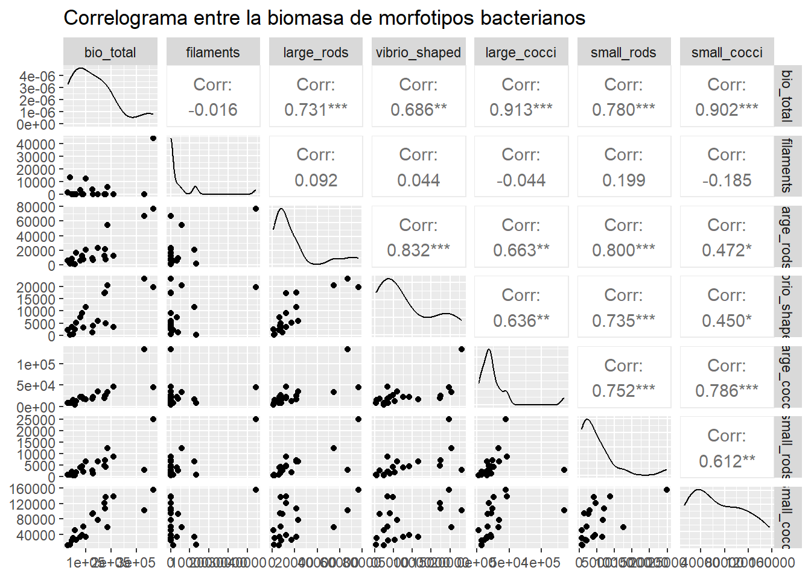
Ahora visualizaremos la correlación como un mapa de calor.
ggcorr(datos_bacterias, method = c("everything", "pearson")) 
ggcorr(datos_bacterias, method = c("everything", "spearman")) 
2.4.2 Entre variables abióticas
Ahora analizaremos las variables explicativas. Esto es útil ya que en el siguiente paso de realizar regresiones múltiples evitaremos colocar en el modelo dos variables muy correlacionadas entre sí, ya que son redundantes. Generamos un nuevo dataframe que es un subconjunto de los anteriores.
Podemos repetir el estudio de comparar correlaciones de Pearson, de Pearson por permutaciones y de Spearman. Aquí resumidamente pasaremos a los correlogramas visuales. ¿Qué pasa con el oxígeno disuelto? Tendremos cuidado con el uso de esta variable en los análisis siguientes.
datos_fq <- datos_RH[,12:23]
ggcorr(datos_fq, method = c("everything", "spearman")) 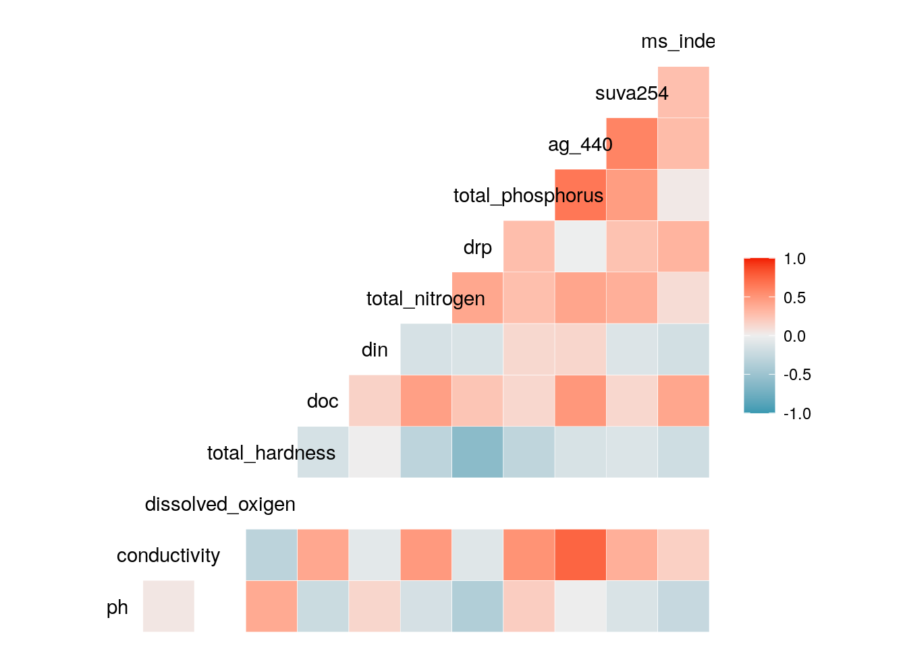 Si queremos tener un resumen numérico de los coeficientes de correlación, podemos generar una matriz.
## Loading required package: lattice## Loading required package: survival## Loading required package: Formula##
## Attaching package: 'Hmisc'## The following objects are masked from 'package:dplyr':
##
## src, summarize## The following objects are masked from 'package:base':
##
## format.pval, unitsrcorr(as.matrix(datos_fq), type="spearman") ## ph conductivity dissolved_oxigen total_hardness doc din
## ph 1.00 0.05 -0.03 0.39 -0.22 0.14
## conductivity 0.05 1.00 0.06 -0.31 0.41 -0.07
## dissolved_oxigen -0.03 0.06 1.00 -0.34 -0.03 -0.29
## total_hardness 0.39 -0.31 -0.34 1.00 -0.16 0.01
## doc -0.22 0.41 -0.03 -0.16 1.00 0.16
## din 0.14 -0.07 -0.29 0.01 0.16 1.00
## total_nitrogen -0.16 0.48 -0.24 -0.30 0.45 -0.15
## drp -0.38 -0.09 -0.15 -0.60 0.24 -0.13
## total_phosphorus 0.19 0.52 -0.22 -0.29 0.13 0.13
## ag_440 -0.01 0.75 -0.32 -0.14 0.49 0.14
## suva254 -0.13 0.36 -0.63 -0.12 0.13 -0.12
## ms_index -0.25 0.17 -0.27 -0.20 0.41 -0.18
## total_nitrogen drp total_phosphorus ag_440 suva254 ms_index
## ph -0.16 -0.38 0.19 -0.01 -0.13 -0.25
## conductivity 0.48 -0.09 0.52 0.75 0.36 0.17
## dissolved_oxigen -0.24 -0.15 -0.22 -0.32 -0.63 -0.27
## total_hardness -0.30 -0.60 -0.29 -0.14 -0.12 -0.20
## doc 0.45 0.24 0.13 0.49 0.13 0.41
## din -0.15 -0.13 0.13 0.14 -0.12 -0.18
## total_nitrogen 1.00 0.41 0.27 0.42 0.36 0.10
## drp 0.41 1.00 0.28 0.00 0.25 0.33
## total_phosphorus 0.27 0.28 1.00 0.66 0.46 0.03
## ag_440 0.42 0.00 0.66 1.00 0.59 0.29
## suva254 0.36 0.25 0.46 0.59 1.00 0.27
## ms_index 0.10 0.33 0.03 0.29 0.27 1.00
##
## n
## ph conductivity dissolved_oxigen total_hardness doc din
## ph 20 20 15 20 20 20
## conductivity 20 20 15 20 20 20
## dissolved_oxigen 15 15 15 15 15 15
## total_hardness 20 20 15 20 20 20
## doc 20 20 15 20 20 20
## din 20 20 15 20 20 20
## total_nitrogen 20 20 15 20 20 20
## drp 20 20 15 20 20 20
## total_phosphorus 20 20 15 20 20 20
## ag_440 20 20 15 20 20 20
## suva254 20 20 15 20 20 20
## ms_index 20 20 15 20 20 20
## total_nitrogen drp total_phosphorus ag_440 suva254 ms_index
## ph 20 20 20 20 20 20
## conductivity 20 20 20 20 20 20
## dissolved_oxigen 15 15 15 15 15 15
## total_hardness 20 20 20 20 20 20
## doc 20 20 20 20 20 20
## din 20 20 20 20 20 20
## total_nitrogen 20 20 20 20 20 20
## drp 20 20 20 20 20 20
## total_phosphorus 20 20 20 20 20 20
## ag_440 20 20 20 20 20 20
## suva254 20 20 20 20 20 20
## ms_index 20 20 20 20 20 20
##
## P
## ph conductivity dissolved_oxigen total_hardness doc
## ph 0.8450 0.9094 0.0875 0.3417
## conductivity 0.8450 0.8292 0.1788 0.0760
## dissolved_oxigen 0.9094 0.8292 0.2182 0.9142
## total_hardness 0.0875 0.1788 0.2182 0.5120
## doc 0.3417 0.0760 0.9142 0.5120
## din 0.5541 0.7813 0.2979 0.9824 0.4934
## total_nitrogen 0.5036 0.0318 0.3973 0.1926 0.0472
## drp 0.1009 0.6939 0.5901 0.0048 0.3147
## total_phosphorus 0.4266 0.0192 0.4402 0.2116 0.5765
## ag_440 0.9699 0.0001 0.2474 0.5434 0.0271
## suva254 0.5801 0.1200 0.0126 0.6090 0.5735
## ms_index 0.2850 0.4631 0.3369 0.3975 0.0714
## din total_nitrogen drp total_phosphorus ag_440 suva254
## ph 0.5541 0.5036 0.1009 0.4266 0.9699 0.5801
## conductivity 0.7813 0.0318 0.6939 0.0192 0.0001 0.1200
## dissolved_oxigen 0.2979 0.3973 0.5901 0.4402 0.2474 0.0126
## total_hardness 0.9824 0.1926 0.0048 0.2116 0.5434 0.6090
## doc 0.4934 0.0472 0.3147 0.5765 0.0271 0.5735
## din 0.5348 0.5760 0.5876 0.5560 0.6267
## total_nitrogen 0.5348 0.0740 0.2464 0.0675 0.1193
## drp 0.5760 0.0740 0.2333 0.9873 0.2787
## total_phosphorus 0.5876 0.2464 0.2333 0.0015 0.0393
## ag_440 0.5560 0.0675 0.9873 0.0015 0.0057
## suva254 0.6267 0.1193 0.2787 0.0393 0.0057
## ms_index 0.4556 0.6686 0.1489 0.8907 0.2144 0.2494
## ms_index
## ph 0.2850
## conductivity 0.4631
## dissolved_oxigen 0.3369
## total_hardness 0.3975
## doc 0.0714
## din 0.4556
## total_nitrogen 0.6686
## drp 0.1489
## total_phosphorus 0.8907
## ag_440 0.2144
## suva254 0.2494
## ms_index2.5 Regresiones múltiples
Ahora vamos a buscar un modelo que explique la variabilidad de la biomasa total de morfotipos bacterianos en función de una o más variables abióticas medidas en los cuerpos de agua. Para ello, es útil todo el conocimiento que contamos sobre estas variables a partir de los análisis exploratorios previos, incluyendo las relaciones entre variables explicativas.
Un modelo de regresión múltiple puede expresarse: y = β0 + β1.x1 + β2.x2 + … + βn.xn + ϵ, donde y es la variable respuesta; β0 es la ordenada al origen; xi son las variables explicativas, cada una con un coeficiente estimado βi; y ϵ es el error.
¿Hay que estandarizar las variables explicativas? Podemos notar que las variables explicativas están en distintas escalas, por ejemplo con ‘summary(datos_fq)’ vemos que ph varía entre 4.65 y 7.1, mientras que total_nitrogen varía entre 1320 y 11330. No es estrictamente necesario estandarizar las variables. En caso de no estandarizar, hay que tener cuidado con la interpretación de los coeficientes βi: si en un modelo final el coeficiente asociado al nitrógeno total es mayor al del pH, no podemos afirmar que el impacto del nitrógeno total sobre la biomasa bacteriana es mayor al del pH. Vamos a ver un ejemplo de interpretación del modelo final más adelante.
Vamos a trabajar con la tabla de datos datos_RH. Estandarizamos y centramos los datos para facilitar la interpretación (y luego comparemos los resultados que se obtienen con las variables originales). La función scale permite centrar y/o escalar una o más columnas de una tabla de datos. Por defecto hace las dos operaciones, pero podemos solicitar que sólo centre ó sólo escale los datos. La operación de centrar significa que para cada columna se calcula la media (omitiendo NAs) y luego a cada valor se le resta la media de esa columna. La operación de escalar significa que el valor de cada celda se divide por la desviación estándar. El siguiente script es para analizar los valores originales de la variable pH, los valores centrados y los valores centrados y escalados.
datos_RH[,12]## # A tibble: 20 × 1
## ph
## <dbl>
## 1 4.91
## 2 5.52
## 3 4.72
## 4 5.09
## 5 4.82
## 6 6.39
## 7 4.75
## 8 4.67
## 9 6.75
## 10 4.65
## 11 5.9
## 12 5.19
## 13 4.66
## 14 6.65
## 15 4.82
## 16 7.1
## 17 4.88
## 18 5.4
## 19 6.2
## 20 5.43scale(datos_RH[,12], center = TRUE, scale = FALSE)## ph
## [1,] -0.515
## [2,] 0.095
## [3,] -0.705
## [4,] -0.335
## [5,] -0.605
## [6,] 0.965
## [7,] -0.675
## [8,] -0.755
## [9,] 1.325
## [10,] -0.775
## [11,] 0.475
## [12,] -0.235
## [13,] -0.765
## [14,] 1.225
## [15,] -0.605
## [16,] 1.675
## [17,] -0.545
## [18,] -0.025
## [19,] 0.775
## [20,] 0.005
## attr(,"scaled:center")
## ph
## 5.425scale(datos_RH[,12], center = TRUE, scale = TRUE) #estos son los parámetros por defecto de la función scale## ph
## [1,] -0.648046357
## [2,] 0.119542532
## [3,] -0.887131421
## [4,] -0.421544718
## [5,] -0.761297177
## [6,] 1.214300456
## [7,] -0.849381148
## [8,] -0.950048543
## [9,] 1.667303735
## [10,] -0.975215392
## [11,] 0.597712660
## [12,] -0.295710474
## [13,] -0.962631968
## [14,] 1.541469491
## [15,] -0.761297177
## [16,] 2.107723589
## [17,] -0.685796631
## [18,] -0.031458561
## [19,] 0.975215392
## [20,] 0.006291712
## attr(,"scaled:center")
## ph
## 5.425
## attr(,"scaled:scale")
## ph
## 0.7946962Ahora vamos a estandarizar todas las variables explicativas.
datos_RH_est <- datos_RH
datos_RH_est[, 12:23] <- scale(datos_RH[, 12:23])
datos_RH_est## # A tibble: 20 × 23
## id pool site date bio_total filaments large_rods vibrio_shaped
## <chr> <fct> <chr> <fct> <dbl> <dbl> <dbl> <dbl>
## 1 1O RH1 shore October_2009 62653 0 16921 5315
## 2 2O RH2 shore October_2009 29808 1435 5645 2384
## 3 3O RH3 shore October_2009 37357 13307 1597 392
## 4 4O RH4 north shore October_2009 46499 0 8085 3499
## 5 5O RH5 shore October_2009 50321 0 1921 451
## 6 1D RH1 shore December_2009 86432 0 12374 9228
## 7 2D RH2 shore December_2009 147788 0 22924 5933
## 8 3D RH3 shore December_2009 210287 0 12309 3471
## 9 4D RH4 north shore December_2009 366384 44419 76819 19692
## 10 5D RH5 shore December_2009 330544 0 66952 23046
## 11 1F RH1 shore February_2010 77850 3177 6414 7533
## 12 2F RH2 shore February_2010 179175 0 7263 4879
## 13 3F RH3 shore February_2010 127395 3886 9283 1294
## 14 4F RH4 north shore February_2010 186223 5860 54624 20331
## 15 5F RH5 shore February_2010 177152 0 21324 17482
## 16 1A RH1 shore April_2010 101197 12331 21098 11615
## 17 2A RH2 shore April_2010 128935 0 6950 4028
## 18 3A RH3 shore April_2010 174051 0 12394 17281
## 19 4A RH4 north shore April_2010 58439 0 901 2484
## 20 5A RH5 shore April_2010 90498 0 7626 3338
## # … with 15 more variables: large_cocci <dbl>, small_rods <dbl>,
## # small_cocci <dbl>, ph <dbl>, conductivity <dbl>, dissolved_oxigen <dbl>,
## # total_hardness <dbl>, doc <dbl>, din <dbl>, total_nitrogen <dbl>,
## # drp <dbl>, total_phosphorus <dbl>, ag_440 <dbl>, suva254 <dbl>,
## # ms_index <dbl>Nota. Uno de los supuestos del modelo de regresión múltiple es que las observaciones son independientes entre sí. Dado que cada laguna fue medida repetidamente en cuatro fechas distintas, es muy posible que las cuatro observaciones de estas lagunas no sean totalmente independientes. A los efectos de esta actividad práctica, vamos a suponer que sí hay independencia entre cada una de las observaciones. Para el futuro, recomendamos explorar análisis que permitan incluir a la identidad de la laguna como factor aleaotorio (modelos lineales generalizados mixtos) y/o considerar las medidas repetidas. Todo lo que veamos a continuación sobre selección de variables es aplicable a otros modelos de regresión más complejos.
2.5.1 Selección automática de variables
Contamos con 12 posibles variables explicativas continuas, más la fecha de muestreo. Un buen modelo de regresión múltiple tendrá un compromiso entre el poder explicativo y la cantidad de variables a incluir. Tengamos en cuenta que para cada variable explicativa tenemos que estimar un coeficiente. Además, un modelo muy complejo puede sobre-ajustar a nuestros datos e implica que, para luego predecir la variable respuesta, necesitaremos conocer el valor de muchas variables, algunas quizás difíciles de obtener a campo. Queremos obtener un modelo con buen poder explicativo pero lo más sencillo posible. Además sólo tenemos 20 observaciones, ¿sería lógico explicarlas con 12 o 13 variables? Y por último, ya vimos que las variables están correlacionadas, por lo cual hay redundancia, y que para algunas variables hay NAs.
Hay dos métodos de selección automática de variables. Luego, veremos cómo hacer una selección manual, lo cual muchas veces nos permite obtener mejores resultados o conocer mejor
2.5.2 Modelos nulo y completo
En primer lugar, construimos un modelo nulo, es decir, sin variables explicativas. Usamos la notación de R de “fórmula” (ver la hoja de referencia Comparación de sintaxis de R ya citada). La virgulilla o símbolo ~ expresa que una variable está en función de otras. En el caso del modelo nulo, indicamos con 1 que no hay variables explicativas. Vamos a trabajar con los datos estandarizados. La función lm signigica linear model y es la que usaremos para ajustar las regresiones múltiples.
modelo_nulo <- lm(bio_total ~ 1, data = datos_RH_est)
summary(modelo_nulo)##
## Call:
## lm(formula = bio_total ~ 1, data = datos_RH_est)
##
## Residuals:
## Min 1Q Median 3Q Max
## -103641 -71850 -19153 44208 232935
##
## Coefficients:
## Estimate Std. Error t value Pr(>|t|)
## (Intercept) 133449 20582 6.484 3.26e-06 ***
## ---
## Signif. codes: 0 '***' 0.001 '**' 0.01 '*' 0.05 '.' 0.1 ' ' 1
##
## Residual standard error: 92050 on 19 degrees of freedomEn este modelo nulo, sólo contamos con un coeficiente estimado para la ordenada al origen (en inglés, intercept, que es significativamente distinta de cero), tenemos 19 grados de libertad y un error residual de 92050.
Para la construcción del modelo completo, es decir, con todas las variables explicativas, vamos a usar todas las variables abióticas excepto el oxígeno disuelto que cuenta con varios NA y la fecha de muestreo.
modelo_completo <- lm(bio_total ~ date + ph + conductivity + total_hardness + doc + din + total_nitrogen + drp + total_phosphorus + ag_440 + suva254 + ms_index, data = datos_RH_est)
summary(modelo_completo)##
## Call:
## lm(formula = bio_total ~ date + ph + conductivity + total_hardness +
## doc + din + total_nitrogen + drp + total_phosphorus + ag_440 +
## suva254 + ms_index, data = datos_RH_est)
##
## Residuals:
## 1 2 3 4 5 6 7 8
## -16862.4 15891.9 4256.6 -12144.1 8858.0 -21518.8 8125.8 -18328.7
## 9 10 11 12 13 14 15 16
## -3907.0 35628.7 -2249.8 -7961.8 -14643.3 3655.2 21199.7 10598.8
## 17 18 19 20
## -32983.0 2219.6 -170.4 20334.9
##
## Coefficients:
## Estimate Std. Error t value Pr(>|t|)
## (Intercept) 181516 71287 2.546 0.0515 .
## dateDecember_2009 34544 83140 0.415 0.6950
## dateFebruary_2010 -108501 106972 -1.014 0.3570
## dateApril_2010 -118308 101025 -1.171 0.2943
## ph 2814 17824 0.158 0.8807
## conductivity 73800 28259 2.612 0.0476 *
## total_hardness -15060 15497 -0.972 0.3758
## doc -11469 17019 -0.674 0.5303
## din 15408 12567 1.226 0.2748
## total_nitrogen 61310 19326 3.172 0.0247 *
## drp -31077 20978 -1.481 0.1986
## total_phosphorus 14382 21719 0.662 0.5371
## ag_440 -51591 31988 -1.613 0.1677
## suva254 17420 15006 1.161 0.2981
## ms_index -4105 15676 -0.262 0.8039
## ---
## Signif. codes: 0 '***' 0.001 '**' 0.01 '*' 0.05 '.' 0.1 ' ' 1
##
## Residual standard error: 32540 on 5 degrees of freedom
## Multiple R-squared: 0.9671, Adjusted R-squared: 0.875
## F-statistic: 10.5 on 14 and 5 DF, p-value: 0.008489Observemos que el modelo completo tiene un R^2 ajustado de 87,5%, con 5 grados de libertad (más adelante interpretaremos estos resultados).
2.5.2.1 Selección secuencial Forward: del modelo nulo, sumando variables explicativas
La regresión Forward inicia con un modelo nulo y en cada paso agrega una variable explicativa significativa hasta llegar al modelo final. La función step en primer lugar pide que le indiquemos el modelo nulo. Luego, en scope, podemos indicar con una fórmula el modelo final máximo al que podemos llegar o (como en este ejemplo) un modelo mínimo lower y un modelo máximo upper (el nulo y el completo, respectivamente). Luego tenemos que indicar en qué dirección se construye el modelo, en este caso es forward.
El criterio que se utiliza para agregar o no una variable es el AIC (Akaike Information Criterion). A partir del modelo nulo, se prueba de agregar todas las variables y se analiza si esa variable reduce el valor de AIC se reduce. Si al agregar una variable el AIC no se reduce, esto significa que el modelo más simple es mejor y la selección se detiene. Podemos correr la siguiente función y analizar los resultados.
modelo_forward <- step(modelo_nulo, scope = list(lower=modelo_nulo, upper=modelo_completo), direction = "forward")## Start: AIC=458.18
## bio_total ~ 1
##
## Df Sum of Sq RSS AIC
## + date 3 8.7701e+10 7.3277e+10 448.44
## + conductivity 1 4.8091e+10 1.1289e+11 453.08
## + total_nitrogen 1 4.5911e+10 1.1507e+11 453.46
## <none> 1.6098e+11 458.18
## + ms_index 1 1.3770e+10 1.4721e+11 458.39
## + din 1 1.2006e+10 1.4897e+11 458.63
## + doc 1 1.1071e+10 1.4991e+11 458.75
## + total_hardness 1 9.3550e+09 1.5162e+11 458.98
## + drp 1 1.8187e+09 1.5916e+11 459.95
## + ph 1 1.0336e+09 1.5994e+11 460.05
## + total_phosphorus 1 4.4439e+08 1.6053e+11 460.12
## + ag_440 1 3.4721e+08 1.6063e+11 460.13
## + suva254 1 1.0572e+08 1.6087e+11 460.16
##
## Step: AIC=448.44
## bio_total ~ date
##
## Df Sum of Sq RSS AIC
## + total_nitrogen 1 3.0178e+10 4.3098e+10 439.82
## + ms_index 1 2.5308e+10 4.7968e+10 441.96
## + total_hardness 1 2.0956e+10 5.2321e+10 443.70
## + conductivity 1 9.0729e+09 6.4204e+10 447.79
## <none> 7.3277e+10 448.44
## + total_phosphorus 1 2.7961e+09 7.0481e+10 449.66
## + ag_440 1 2.3777e+09 7.0899e+10 449.78
## + suva254 1 1.9938e+09 7.1283e+10 449.88
## + drp 1 1.6684e+09 7.1608e+10 449.97
## + doc 1 6.5824e+08 7.2618e+10 450.26
## + din 1 2.9814e+08 7.2979e+10 450.35
## + ph 1 1.3244e+08 7.3144e+10 450.40
##
## Step: AIC=439.82
## bio_total ~ date + total_nitrogen
##
## Df Sum of Sq RSS AIC
## + ms_index 1 1.5933e+10 2.7165e+10 432.59
## + conductivity 1 1.3897e+10 2.9202e+10 434.04
## + total_hardness 1 4.9749e+09 3.8123e+10 439.37
## + doc 1 4.9533e+09 3.8145e+10 439.38
## <none> 4.3098e+10 439.82
## + total_phosphorus 1 2.1160e+09 4.0982e+10 440.81
## + drp 1 1.7711e+09 4.1327e+10 440.98
## + ph 1 1.5312e+09 4.1567e+10 441.10
## + suva254 1 1.1274e+09 4.1971e+10 441.29
## + din 1 9.4483e+08 4.2153e+10 441.38
## + ag_440 1 8.5977e+07 4.3012e+10 441.78
##
## Step: AIC=432.59
## bio_total ~ date + total_nitrogen + ms_index
##
## Df Sum of Sq RSS AIC
## + conductivity 1 1.1302e+10 1.5863e+10 423.83
## + total_hardness 1 6.2126e+09 2.0953e+10 429.40
## + suva254 1 3.8600e+09 2.3305e+10 431.52
## <none> 2.7165e+10 432.59
## + total_phosphorus 1 2.4124e+09 2.4753e+10 432.73
## + drp 1 1.0825e+09 2.6083e+10 433.78
## + din 1 7.2970e+08 2.6435e+10 434.04
## + doc 1 7.2857e+08 2.6437e+10 434.05
## + ag_440 1 2.5952e+08 2.6906e+10 434.40
## + ph 1 7.3627e+07 2.7092e+10 434.54
##
## Step: AIC=423.83
## bio_total ~ date + total_nitrogen + ms_index + conductivity
##
## Df Sum of Sq RSS AIC
## + doc 1 1665616714 1.4197e+10 423.61
## <none> 1.5863e+10 423.83
## + ag_440 1 1509519938 1.4353e+10 423.83
## + suva254 1 1457149002 1.4406e+10 423.90
## + ph 1 928283403 1.4935e+10 424.62
## + din 1 206546528 1.5656e+10 425.57
## + total_hardness 1 95043074 1.5768e+10 425.71
## + total_phosphorus 1 21598302 1.5841e+10 425.80
## + drp 1 7603750 1.5855e+10 425.82
##
## Step: AIC=423.61
## bio_total ~ date + total_nitrogen + ms_index + conductivity +
## doc
##
## Df Sum of Sq RSS AIC
## + din 1 3065337891 1.1132e+10 420.75
## <none> 1.4197e+10 423.61
## + suva254 1 711689288 1.3486e+10 424.58
## + ag_440 1 582841690 1.3614e+10 424.77
## + drp 1 490860741 1.3706e+10 424.91
## + ph 1 305626182 1.3892e+10 425.18
## + total_hardness 1 23984669 1.4173e+10 425.58
## + total_phosphorus 1 10218359 1.4187e+10 425.60
##
## Step: AIC=420.75
## bio_total ~ date + total_nitrogen + ms_index + conductivity +
## doc + din
##
## Df Sum of Sq RSS AIC
## <none> 1.1132e+10 420.75
## + ag_440 1 861844423 1.0270e+10 421.14
## + suva254 1 856008929 1.0276e+10 421.15
## + drp 1 102714121 1.1029e+10 422.56
## + total_phosphorus 1 65934861 1.1066e+10 422.63
## + ph 1 25518439 1.1106e+10 422.70
## + total_hardness 1 14969693 1.1117e+10 422.72summary(modelo_forward)##
## Call:
## lm(formula = bio_total ~ date + total_nitrogen + ms_index + conductivity +
## doc + din, data = datos_RH_est)
##
## Residuals:
## Min 1Q Median 3Q Max
## -43732 -15210 -1318 9721 56450
##
## Coefficients:
## Estimate Std. Error t value Pr(>|t|)
## (Intercept) 161030 34616 4.652 0.000703 ***
## dateDecember_2009 82352 44747 1.840 0.092823 .
## dateFebruary_2010 -83583 48224 -1.733 0.110955
## dateApril_2010 -109091 48920 -2.230 0.047528 *
## total_nitrogen 64465 11963 5.389 0.000220 ***
## ms_index -19291 8911 -2.165 0.053256 .
## conductivity 59452 17532 3.391 0.006024 **
## doc -27533 13022 -2.114 0.058129 .
## din 19263 11068 1.740 0.109649
## ---
## Signif. codes: 0 '***' 0.001 '**' 0.01 '*' 0.05 '.' 0.1 ' ' 1
##
## Residual standard error: 31810 on 11 degrees of freedom
## Multiple R-squared: 0.9308, Adjusted R-squared: 0.8806
## F-statistic: 18.51 on 8 and 11 DF, p-value: 2.397e-05El modelo completo elegido por el método automático Forward incluye a las variables: date (notar que al ser una variable categórica con cuatro niveles se generan tres variables dummy) y a cinco variables abióticas. De ellas, algunas no tienen un efecto signigicativo según el p-valor a pesar de haber reducido el AIC (veremos cómo mejorar este modelo con el método de selección manual). El R^2 ajustado es de 88,06%, con 11 grados de libertad.
2.5.2.2 Selección secuencial Backward: del modelo completo, quitando variables explicativas
La regresión Backward inicia con un modelo completo y en cada paso va quitando la variable explicativa menos significativa. Modificamos la fórmula del modelo Forward: ahora iniciamos con el modelo completo.
modelo_backward <- step(modelo_completo, scope = list(lower=modelo_nulo, upper=modelo_completo), direction = "backward")## Start: AIC=417.89
## bio_total ~ date + ph + conductivity + total_hardness + doc +
## din + total_nitrogen + drp + total_phosphorus + ag_440 +
## suva254 + ms_index
##
## Df Sum of Sq RSS AIC
## - ph 1 2.6397e+07 5.3214e+09 415.99
## - ms_index 1 7.2630e+07 5.3676e+09 416.16
## - total_phosphorus 1 4.6437e+08 5.7594e+09 417.57
## - doc 1 4.8093e+08 5.7759e+09 417.62
## <none> 5.2950e+09 417.89
## - total_hardness 1 1.0002e+09 6.2951e+09 419.35
## - suva254 1 1.4271e+09 6.7221e+09 420.66
## - din 1 1.5919e+09 6.8869e+09 421.14
## - drp 1 2.3241e+09 7.6191e+09 423.16
## - ag_440 1 2.7546e+09 8.0496e+09 424.26
## - conductivity 1 7.2228e+09 1.2518e+10 433.09
## - date 3 1.3281e+10 1.8576e+10 436.99
## - total_nitrogen 1 1.0658e+10 1.5953e+10 437.94
##
## Step: AIC=415.99
## bio_total ~ date + conductivity + total_hardness + doc + din +
## total_nitrogen + drp + total_phosphorus + ag_440 + suva254 +
## ms_index
##
## Df Sum of Sq RSS AIC
## - ms_index 1 6.6515e+07 5.3879e+09 414.23
## <none> 5.3214e+09 415.99
## - doc 1 7.3119e+08 6.0526e+09 416.56
## - total_hardness 1 1.0013e+09 6.3227e+09 417.43
## - total_phosphorus 1 1.0863e+09 6.4077e+09 417.70
## - din 1 1.8299e+09 7.1513e+09 419.90
## - suva254 1 1.8543e+09 7.1757e+09 419.96
## - drp 1 2.4459e+09 7.7673e+09 421.55
## - ag_440 1 4.4059e+09 9.7272e+09 426.05
## - conductivity 1 7.4832e+09 1.2805e+10 431.55
## - total_nitrogen 1 1.1671e+10 1.6993e+10 437.21
## - date 3 1.8187e+10 2.3508e+10 439.70
##
## Step: AIC=414.23
## bio_total ~ date + conductivity + total_hardness + doc + din +
## total_nitrogen + drp + total_phosphorus + ag_440 + suva254
##
## Df Sum of Sq RSS AIC
## <none> 5.3879e+09 414.23
## - doc 1 8.5179e+08 6.2397e+09 415.17
## - total_hardness 1 1.3588e+09 6.7467e+09 416.73
## - din 1 1.7839e+09 7.1718e+09 417.95
## - suva254 1 1.7935e+09 7.1814e+09 417.98
## - total_phosphorus 1 1.8814e+09 7.2693e+09 418.22
## - ag_440 1 7.5077e+09 1.2896e+10 429.69
## - drp 1 8.0232e+09 1.3411e+10 430.47
## - conductivity 1 8.6662e+09 1.4054e+10 431.41
## - date 3 1.8637e+10 2.4024e+10 438.13
## - total_nitrogen 1 1.5758e+10 2.1145e+10 439.58summary(modelo_backward)##
## Call:
## lm(formula = bio_total ~ date + conductivity + total_hardness +
## doc + din + total_nitrogen + drp + total_phosphorus + ag_440 +
## suva254, data = datos_RH_est)
##
## Residuals:
## Min 1Q Median 3Q Max
## -35553 -11521 1893 12213 34533
##
## Coefficients:
## Estimate Std. Error t value Pr(>|t|)
## (Intercept) 179438 44004 4.078 0.00470 **
## dateDecember_2009 33089 54723 0.605 0.56447
## dateFebruary_2010 -103636 67833 -1.528 0.17040
## dateApril_2010 -113409 58328 -1.944 0.09294 .
## conductivity 74699 22262 3.355 0.01216 *
## total_hardness -16434 12369 -1.329 0.22563
## doc -13408 12745 -1.052 0.32777
## din 15674 10295 1.522 0.17173
## total_nitrogen 62335 13777 4.525 0.00272 **
## drp -35621 11033 -3.229 0.01448 *
## total_phosphorus 18749 11992 1.563 0.16193
## ag_440 -58207 18637 -3.123 0.01677 *
## suva254 15282 10011 1.526 0.17073
## ---
## Signif. codes: 0 '***' 0.001 '**' 0.01 '*' 0.05 '.' 0.1 ' ' 1
##
## Residual standard error: 27740 on 7 degrees of freedom
## Multiple R-squared: 0.9665, Adjusted R-squared: 0.9092
## F-statistic: 16.85 on 12 and 7 DF, p-value: 0.000514El mejor modelo según el criterio AIC incluye la fecha date y nueve variables abióticas, algunas no significativas según el p-valor. El R^2 ajustado es de 90,92%, con 7 grados de libertad.
2.5.2.3 Selección Stepwise: combinación secuencial de Forward y Backward
La regresión Stepwise inicia con un modelo nulo, en cada paso agrega una variable explicativa significativa (similar a Forward), pero revisa el modelo y si hay una variable no significativa la quita y repite el paso.
modelo_stepwise <- step(modelo_nulo, scope = list(lower=modelo_nulo, upper=modelo_completo), direction = "both")## Start: AIC=458.18
## bio_total ~ 1
##
## Df Sum of Sq RSS AIC
## + date 3 8.7701e+10 7.3277e+10 448.44
## + conductivity 1 4.8091e+10 1.1289e+11 453.08
## + total_nitrogen 1 4.5911e+10 1.1507e+11 453.46
## <none> 1.6098e+11 458.18
## + ms_index 1 1.3770e+10 1.4721e+11 458.39
## + din 1 1.2006e+10 1.4897e+11 458.63
## + doc 1 1.1071e+10 1.4991e+11 458.75
## + total_hardness 1 9.3550e+09 1.5162e+11 458.98
## + drp 1 1.8187e+09 1.5916e+11 459.95
## + ph 1 1.0336e+09 1.5994e+11 460.05
## + total_phosphorus 1 4.4439e+08 1.6053e+11 460.12
## + ag_440 1 3.4721e+08 1.6063e+11 460.13
## + suva254 1 1.0572e+08 1.6087e+11 460.16
##
## Step: AIC=448.44
## bio_total ~ date
##
## Df Sum of Sq RSS AIC
## + total_nitrogen 1 3.0178e+10 4.3098e+10 439.82
## + ms_index 1 2.5308e+10 4.7968e+10 441.96
## + total_hardness 1 2.0956e+10 5.2321e+10 443.70
## + conductivity 1 9.0729e+09 6.4204e+10 447.79
## <none> 7.3277e+10 448.44
## + total_phosphorus 1 2.7961e+09 7.0481e+10 449.66
## + ag_440 1 2.3777e+09 7.0899e+10 449.78
## + suva254 1 1.9938e+09 7.1283e+10 449.88
## + drp 1 1.6684e+09 7.1608e+10 449.97
## + doc 1 6.5824e+08 7.2618e+10 450.26
## + din 1 2.9814e+08 7.2979e+10 450.35
## + ph 1 1.3244e+08 7.3144e+10 450.40
## - date 3 8.7701e+10 1.6098e+11 458.18
##
## Step: AIC=439.82
## bio_total ~ date + total_nitrogen
##
## Df Sum of Sq RSS AIC
## + ms_index 1 1.5933e+10 2.7165e+10 432.59
## + conductivity 1 1.3897e+10 2.9202e+10 434.04
## + total_hardness 1 4.9749e+09 3.8123e+10 439.37
## + doc 1 4.9533e+09 3.8145e+10 439.38
## <none> 4.3098e+10 439.82
## + total_phosphorus 1 2.1160e+09 4.0982e+10 440.81
## + drp 1 1.7711e+09 4.1327e+10 440.98
## + ph 1 1.5312e+09 4.1567e+10 441.10
## + suva254 1 1.1274e+09 4.1971e+10 441.29
## + din 1 9.4483e+08 4.2153e+10 441.38
## + ag_440 1 8.5977e+07 4.3012e+10 441.78
## - total_nitrogen 1 3.0178e+10 7.3277e+10 448.44
## - date 3 7.1968e+10 1.1507e+11 453.46
##
## Step: AIC=432.59
## bio_total ~ date + total_nitrogen + ms_index
##
## Df Sum of Sq RSS AIC
## + conductivity 1 1.1302e+10 1.5863e+10 423.83
## + total_hardness 1 6.2126e+09 2.0953e+10 429.40
## + suva254 1 3.8600e+09 2.3305e+10 431.52
## <none> 2.7165e+10 432.59
## + total_phosphorus 1 2.4124e+09 2.4753e+10 432.73
## + drp 1 1.0825e+09 2.6083e+10 433.78
## + din 1 7.2970e+08 2.6435e+10 434.04
## + doc 1 7.2857e+08 2.6437e+10 434.05
## + ag_440 1 2.5952e+08 2.6906e+10 434.40
## + ph 1 7.3627e+07 2.7092e+10 434.54
## - ms_index 1 1.5933e+10 4.3098e+10 439.82
## - total_nitrogen 1 2.0803e+10 4.7968e+10 441.96
## - date 3 7.5971e+10 1.0314e+11 453.27
##
## Step: AIC=423.83
## bio_total ~ date + total_nitrogen + ms_index + conductivity
##
## Df Sum of Sq RSS AIC
## + doc 1 1.6656e+09 1.4197e+10 423.61
## <none> 1.5863e+10 423.83
## + ag_440 1 1.5095e+09 1.4353e+10 423.83
## + suva254 1 1.4571e+09 1.4406e+10 423.90
## + ph 1 9.2828e+08 1.4935e+10 424.62
## + din 1 2.0655e+08 1.5656e+10 425.57
## + total_hardness 1 9.5043e+07 1.5768e+10 425.71
## + total_phosphorus 1 2.1598e+07 1.5841e+10 425.80
## + drp 1 7.6038e+06 1.5855e+10 425.82
## - conductivity 1 1.1302e+10 2.7165e+10 432.59
## - ms_index 1 1.3339e+10 2.9202e+10 434.04
## - total_nitrogen 1 2.4923e+10 4.0786e+10 440.72
## - date 3 6.4135e+10 7.9998e+10 450.19
##
## Step: AIC=423.61
## bio_total ~ date + total_nitrogen + ms_index + conductivity +
## doc
##
## Df Sum of Sq RSS AIC
## + din 1 3.0653e+09 1.1132e+10 420.75
## <none> 1.4197e+10 423.61
## - doc 1 1.6656e+09 1.5863e+10 423.83
## + suva254 1 7.1169e+08 1.3486e+10 424.58
## + ag_440 1 5.8284e+08 1.3614e+10 424.77
## + drp 1 4.9086e+08 1.3706e+10 424.91
## + ph 1 3.0563e+08 1.3892e+10 425.18
## + total_hardness 1 2.3985e+07 1.4173e+10 425.58
## + total_phosphorus 1 1.0218e+07 1.4187e+10 425.60
## - ms_index 1 8.5183e+09 2.2716e+10 431.01
## - conductivity 1 1.2239e+10 2.6437e+10 434.05
## - total_nitrogen 1 2.6358e+10 4.0555e+10 442.60
## - date 3 6.5570e+10 7.9767e+10 452.13
##
## Step: AIC=420.75
## bio_total ~ date + total_nitrogen + ms_index + conductivity +
## doc + din
##
## Df Sum of Sq RSS AIC
## <none> 1.1132e+10 420.75
## + ag_440 1 8.6184e+08 1.0270e+10 421.14
## + suva254 1 8.5601e+08 1.0276e+10 421.15
## + drp 1 1.0271e+08 1.1029e+10 422.56
## + total_phosphorus 1 6.5935e+07 1.1066e+10 422.63
## + ph 1 2.5518e+07 1.1106e+10 422.70
## + total_hardness 1 1.4970e+07 1.1117e+10 422.72
## - din 1 3.0653e+09 1.4197e+10 423.61
## - doc 1 4.5244e+09 1.5656e+10 425.57
## - ms_index 1 4.7426e+09 1.5875e+10 425.84
## - conductivity 1 1.1637e+10 2.2769e+10 433.06
## - total_nitrogen 1 2.9385e+10 4.0517e+10 444.59
## - date 3 5.9982e+10 7.1114e+10 451.84summary(modelo_stepwise)##
## Call:
## lm(formula = bio_total ~ date + total_nitrogen + ms_index + conductivity +
## doc + din, data = datos_RH_est)
##
## Residuals:
## Min 1Q Median 3Q Max
## -43732 -15210 -1318 9721 56450
##
## Coefficients:
## Estimate Std. Error t value Pr(>|t|)
## (Intercept) 161030 34616 4.652 0.000703 ***
## dateDecember_2009 82352 44747 1.840 0.092823 .
## dateFebruary_2010 -83583 48224 -1.733 0.110955
## dateApril_2010 -109091 48920 -2.230 0.047528 *
## total_nitrogen 64465 11963 5.389 0.000220 ***
## ms_index -19291 8911 -2.165 0.053256 .
## conductivity 59452 17532 3.391 0.006024 **
## doc -27533 13022 -2.114 0.058129 .
## din 19263 11068 1.740 0.109649
## ---
## Signif. codes: 0 '***' 0.001 '**' 0.01 '*' 0.05 '.' 0.1 ' ' 1
##
## Residual standard error: 31810 on 11 degrees of freedom
## Multiple R-squared: 0.9308, Adjusted R-squared: 0.8806
## F-statistic: 18.51 on 8 and 11 DF, p-value: 2.397e-05Comparen el modelo final según este método con los obtenidos con los métodos Forward y Backward.
2.5.3 Selección manual de variables
Vamos a realizar una selección manual similar a Forward: partimos de un modelo nulo y agregamos variables de a una. Los criterios para agregar o no una variable serán:
- AIC: al agregar una variable, el AIC del modelo se reduce en 2 o más respecto al AIC del modelo más sencillo.
- Significancia: el efecto de la variable es significativo, con un nivel de significancia del 5% (p < 0.05).
- Redundancia: evitaremos agregar variables muy correlacionadas entre sí.
Algunas razones por las cuales es recomendable hacer una selección manual: a) entenderemos mejor nuestros modelos; b) podemos ajustar uno o más modelos; c) podemos incluir más fácilmente las interacciones entre variables; d) podemos tener en cuenta múltiples criterios para elegir si agregamos o no variables al modelo; e) vamos a incluir consideraciones sobre la redundancia de variables, según lo que vimos en los análisis de regresiones múltiples.
2.5.3.1 Modelos univariados
En primer lugar, ajustamos todos los modelos univariados y los comparamos con el modelo nulo. El AIC del modelo nulo es:
AIC(modelo_nulo)## [1] 516.9335Corremos todos los modelos nulos. En este caso no los guardamos (pero podríamos hacerlo), sólo buscamos el resumen.
summary(lm(bio_total ~ date, data = datos_RH_est))##
## Call:
## lm(formula = bio_total ~ date, data = datos_RH_est)
##
## Residuals:
## Min 1Q Median 3Q Max
## -141855 -20636 -3400 28099 138097
##
## Coefficients:
## Estimate Std. Error t value Pr(>|t|)
## (Intercept) 45328 30265 1.498 0.153679
## dateDecember_2009 182959 42801 4.275 0.000581 ***
## dateFebruary_2010 104231 42801 2.435 0.026956 *
## dateApril_2010 65296 42801 1.526 0.146636
## ---
## Signif. codes: 0 '***' 0.001 '**' 0.01 '*' 0.05 '.' 0.1 ' ' 1
##
## Residual standard error: 67670 on 16 degrees of freedom
## Multiple R-squared: 0.5448, Adjusted R-squared: 0.4595
## F-statistic: 6.383 on 3 and 16 DF, p-value: 0.004745summary(lm(bio_total ~ ph, data = datos_RH_est))##
## Call:
## lm(formula = bio_total ~ ph, data = datos_RH_est)
##
## Residuals:
## Min 1Q Median 3Q Max
## -104523 -68891 -21227 43030 220637
##
## Coefficients:
## Estimate Std. Error t value Pr(>|t|)
## (Intercept) 133449 21078 6.331 5.76e-06 ***
## ph 7376 21626 0.341 0.737
## ---
## Signif. codes: 0 '***' 0.001 '**' 0.01 '*' 0.05 '.' 0.1 ' ' 1
##
## Residual standard error: 94260 on 18 degrees of freedom
## Multiple R-squared: 0.006421, Adjusted R-squared: -0.04878
## F-statistic: 0.1163 on 1 and 18 DF, p-value: 0.737summary(lm(bio_total ~ conductivity, data = datos_RH_est))##
## Call:
## lm(formula = bio_total ~ conductivity, data = datos_RH_est)
##
## Residuals:
## Min 1Q Median 3Q Max
## -128497 -34802 -12961 17067 200813
##
## Coefficients:
## Estimate Std. Error t value Pr(>|t|)
## (Intercept) 133449 17708 7.536 5.68e-07 ***
## conductivity 50310 18168 2.769 0.0126 *
## ---
## Signif. codes: 0 '***' 0.001 '**' 0.01 '*' 0.05 '.' 0.1 ' ' 1
##
## Residual standard error: 79190 on 18 degrees of freedom
## Multiple R-squared: 0.2987, Adjusted R-squared: 0.2598
## F-statistic: 7.668 on 1 and 18 DF, p-value: 0.01264summary(lm(bio_total ~ total_hardness, data = datos_RH_est))##
## Call:
## lm(formula = bio_total ~ total_hardness, data = datos_RH_est)
##
## Residuals:
## Min 1Q Median 3Q Max
## -132383 -63178 -23214 49696 224033
##
## Coefficients:
## Estimate Std. Error t value Pr(>|t|)
## (Intercept) 133449 20522 6.503 4.09e-06 ***
## total_hardness -22189 21056 -1.054 0.306
## ---
## Signif. codes: 0 '***' 0.001 '**' 0.01 '*' 0.05 '.' 0.1 ' ' 1
##
## Residual standard error: 91780 on 18 degrees of freedom
## Multiple R-squared: 0.05811, Adjusted R-squared: 0.005787
## F-statistic: 1.111 on 1 and 18 DF, p-value: 0.3059summary(lm(bio_total ~ doc, data = datos_RH_est))##
## Call:
## lm(formula = bio_total ~ doc, data = datos_RH_est)
##
## Residuals:
## Min 1Q Median 3Q Max
## -91318 -58325 -35827 39124 250399
##
## Coefficients:
## Estimate Std. Error t value Pr(>|t|)
## (Intercept) 133449 20406 6.540 3.8e-06 ***
## doc 24139 20936 1.153 0.264
## ---
## Signif. codes: 0 '***' 0.001 '**' 0.01 '*' 0.05 '.' 0.1 ' ' 1
##
## Residual standard error: 91260 on 18 degrees of freedom
## Multiple R-squared: 0.06877, Adjusted R-squared: 0.01704
## F-statistic: 1.329 on 1 and 18 DF, p-value: 0.264summary(lm(bio_total ~ din, data = datos_RH_est))##
## Call:
## lm(formula = bio_total ~ din, data = datos_RH_est)
##
## Residuals:
## Min 1Q Median 3Q Max
## -120561 -62881 -19252 32721 230252
##
## Coefficients:
## Estimate Std. Error t value Pr(>|t|)
## (Intercept) 133449 20342 6.560 3.65e-06 ***
## din -25138 20871 -1.204 0.244
## ---
## Signif. codes: 0 '***' 0.001 '**' 0.01 '*' 0.05 '.' 0.1 ' ' 1
##
## Residual standard error: 90970 on 18 degrees of freedom
## Multiple R-squared: 0.07458, Adjusted R-squared: 0.02317
## F-statistic: 1.451 on 1 and 18 DF, p-value: 0.244summary(lm(bio_total ~ total_nitrogen, data = datos_RH_est))##
## Call:
## lm(formula = bio_total ~ total_nitrogen, data = datos_RH_est)
##
## Residuals:
## Min 1Q Median 3Q Max
## -85298 -49521 -14767 25657 211357
##
## Coefficients:
## Estimate Std. Error t value Pr(>|t|)
## (Intercept) 133449 17878 7.464 6.48e-07 ***
## total_nitrogen 49157 18343 2.680 0.0153 *
## ---
## Signif. codes: 0 '***' 0.001 '**' 0.01 '*' 0.05 '.' 0.1 ' ' 1
##
## Residual standard error: 79950 on 18 degrees of freedom
## Multiple R-squared: 0.2852, Adjusted R-squared: 0.2455
## F-statistic: 7.182 on 1 and 18 DF, p-value: 0.01529summary(lm(bio_total ~ drp, data = datos_RH_est))##
## Call:
## lm(formula = bio_total ~ drp, data = datos_RH_est)
##
## Residuals:
## Min 1Q Median 3Q Max
## -107917 -65468 -10016 43286 228659
##
## Coefficients:
## Estimate Std. Error t value Pr(>|t|)
## (Intercept) 133449 21026 6.347 5.58e-06 ***
## drp -9784 21573 -0.454 0.656
## ---
## Signif. codes: 0 '***' 0.001 '**' 0.01 '*' 0.05 '.' 0.1 ' ' 1
##
## Residual standard error: 94030 on 18 degrees of freedom
## Multiple R-squared: 0.0113, Adjusted R-squared: -0.04363
## F-statistic: 0.2057 on 1 and 18 DF, p-value: 0.6556summary(lm(bio_total ~ total_phosphorus, data = datos_RH_est))##
## Call:
## lm(formula = bio_total ~ total_phosphorus, data = datos_RH_est)
##
## Residuals:
## Min 1Q Median 3Q Max
## -104702 -73112 -20945 36201 234799
##
## Coefficients:
## Estimate Std. Error t value Pr(>|t|)
## (Intercept) 133449 21117 6.320 5.9e-06 ***
## total_phosphorus 4836 21666 0.223 0.826
## ---
## Signif. codes: 0 '***' 0.001 '**' 0.01 '*' 0.05 '.' 0.1 ' ' 1
##
## Residual standard error: 94440 on 18 degrees of freedom
## Multiple R-squared: 0.002761, Adjusted R-squared: -0.05264
## F-statistic: 0.04983 on 1 and 18 DF, p-value: 0.8259summary(lm(bio_total ~ ag_440, data = datos_RH_est))##
## Call:
## lm(formula = bio_total ~ ag_440, data = datos_RH_est)
##
## Residuals:
## Min 1Q Median 3Q Max
## -107303 -68950 -18224 48291 226609
##
## Coefficients:
## Estimate Std. Error t value Pr(>|t|)
## (Intercept) 133449 21123 6.318 5.92e-06 ***
## ag_440 -4275 21672 -0.197 0.846
## ---
## Signif. codes: 0 '***' 0.001 '**' 0.01 '*' 0.05 '.' 0.1 ' ' 1
##
## Residual standard error: 94470 on 18 degrees of freedom
## Multiple R-squared: 0.002157, Adjusted R-squared: -0.05328
## F-statistic: 0.03891 on 1 and 18 DF, p-value: 0.8458summary(lm(bio_total ~ suva254, data = datos_RH_est))##
## Call:
## lm(formula = bio_total ~ suva254, data = datos_RH_est)
##
## Residuals:
## Min 1Q Median 3Q Max
## -104804 -72849 -18281 49172 228928
##
## Coefficients:
## Estimate Std. Error t value Pr(>|t|)
## (Intercept) 133449 21139 6.313 5.98e-06 ***
## suva254 -2359 21688 -0.109 0.915
## ---
## Signif. codes: 0 '***' 0.001 '**' 0.01 '*' 0.05 '.' 0.1 ' ' 1
##
## Residual standard error: 94540 on 18 degrees of freedom
## Multiple R-squared: 0.0006568, Adjusted R-squared: -0.05486
## F-statistic: 0.01183 on 1 and 18 DF, p-value: 0.9146summary(lm(bio_total ~ ms_index, data = datos_RH_est))##
## Call:
## lm(formula = bio_total ~ ms_index, data = datos_RH_est)
##
## Residuals:
## Min 1Q Median 3Q Max
## -126832 -71941 -1492 46065 198950
##
## Coefficients:
## Estimate Std. Error t value Pr(>|t|)
## (Intercept) 133449 20222 6.599 3.38e-06 ***
## ms_index -26921 20747 -1.298 0.211
## ---
## Signif. codes: 0 '***' 0.001 '**' 0.01 '*' 0.05 '.' 0.1 ' ' 1
##
## Residual standard error: 90430 on 18 degrees of freedom
## Multiple R-squared: 0.08554, Adjusted R-squared: 0.03473
## F-statistic: 1.684 on 1 and 18 DF, p-value: 0.2108Observar que el modelo univariado con date es significativo: la biomasa bacteriana es distinta en diciembre de 2009 y febrero de 2010 (p < 0.05) respecto al nivel base de octubre de 2009. También son significativos los modelos de conductivity y de total_nitrogen. Los R^2 de estos modelos son 0.4595, 0.2598 y 0.2455, respectivamente. Podemos obtener sus AIC son la función AIC como hicimos con el modelo nulo y vemos que sus AIC son 507.19, 511.84 y 512.22. En todos los casos, el AIC es menor al del modelo nulo. Haremos entonces dos ramas de modelos de regresión múltiple, uno iniciando con date y otro iniciando con conductivity (podríamos hacer también la rama de total_nitrogen).
2.5.3.2 Modelos de regresión múltiple
Partimos de los dos mejores modelos univariados y agregamos de a una a todas las variables.
2.5.3.3 Iniciando con la fecha de muestreo
modelo_fecha <- lm(bio_total ~ date, data = datos_RH_est) ## AIC 507.19Los modelos bivariados son (analicemos los p-valores de las variables incluidas y luego el AIC de los modelos):
summary(lm(bio_total ~ date + ph, data = datos_RH_est))##
## Call:
## lm(formula = bio_total ~ date + ph, data = datos_RH_est)
##
## Residuals:
## Min 1Q Median 3Q Max
## -138477 -22328 -1676 26205 142757
##
## Coefficients:
## Estimate Std. Error t value Pr(>|t|)
## (Intercept) 43856 32480 1.350 0.19696
## dateDecember_2009 184492 45132 4.088 0.00097 ***
## dateFebruary_2010 105771 45141 2.343 0.03332 *
## dateApril_2010 68111 47352 1.438 0.17086
## ph -2832 17181 -0.165 0.87130
## ---
## Signif. codes: 0 '***' 0.001 '**' 0.01 '*' 0.05 '.' 0.1 ' ' 1
##
## Residual standard error: 69830 on 15 degrees of freedom
## Multiple R-squared: 0.5456, Adjusted R-squared: 0.4245
## F-statistic: 4.503 on 4 and 15 DF, p-value: 0.01373summary(lm(bio_total ~ date + conductivity, data = datos_RH_est))##
## Call:
## lm(formula = bio_total ~ date + conductivity, data = datos_RH_est)
##
## Residuals:
## Min 1Q Median 3Q Max
## -109509 -40830 -75 35420 121548
##
## Coefficients:
## Estimate Std. Error t value Pr(>|t|)
## (Intercept) 122957.8 60820.4 2.022 0.0614 .
## dateDecember_2009 89081.0 76614.9 1.163 0.2631
## dateFebruary_2010 273.1 82526.5 0.003 0.9974
## dateApril_2010 -47387.8 87763.6 -0.540 0.5972
## conductivity 51368.1 35282.2 1.456 0.1660
## ---
## Signif. codes: 0 '***' 0.001 '**' 0.01 '*' 0.05 '.' 0.1 ' ' 1
##
## Residual standard error: 65420 on 15 degrees of freedom
## Multiple R-squared: 0.6012, Adjusted R-squared: 0.4948
## F-statistic: 5.652 on 4 and 15 DF, p-value: 0.005585summary(lm(bio_total ~ date + total_hardness, data = datos_RH_est)) ## AIC 502.45##
## Call:
## lm(formula = bio_total ~ date + total_hardness, data = datos_RH_est)
##
## Residuals:
## Min 1Q Median 3Q Max
## -102529 -29179 -6313 35596 121418
##
## Coefficients:
## Estimate Std. Error t value Pr(>|t|)
## (Intercept) 43958 26418 1.664 0.116872
## dateDecember_2009 186393 37379 4.987 0.000163 ***
## dateFebruary_2010 125816 38377 3.278 0.005079 **
## dateApril_2010 45756 38194 1.198 0.249507
## total_hardness -36430 14863 -2.451 0.026984 *
## ---
## Signif. codes: 0 '***' 0.001 '**' 0.01 '*' 0.05 '.' 0.1 ' ' 1
##
## Residual standard error: 59060 on 15 degrees of freedom
## Multiple R-squared: 0.675, Adjusted R-squared: 0.5883
## F-statistic: 7.788 on 4 and 15 DF, p-value: 0.001324summary(lm(bio_total ~ date + doc, data = datos_RH_est))##
## Call:
## lm(formula = bio_total ~ date + doc, data = datos_RH_est)
##
## Residuals:
## Min 1Q Median 3Q Max
## -145469 -14517 -2572 24403 130490
##
## Coefficients:
## Estimate Std. Error t value Pr(>|t|)
## (Intercept) 38792 35810 1.083 0.2958
## dateDecember_2009 191996 50369 3.812 0.0017 **
## dateFebruary_2010 112259 49096 2.287 0.0372 *
## dateApril_2010 74374 50424 1.475 0.1609
## doc -7058 19141 -0.369 0.7175
## ---
## Signif. codes: 0 '***' 0.001 '**' 0.01 '*' 0.05 '.' 0.1 ' ' 1
##
## Residual standard error: 69580 on 15 degrees of freedom
## Multiple R-squared: 0.5489, Adjusted R-squared: 0.4286
## F-statistic: 4.563 on 4 and 15 DF, p-value: 0.01306summary(lm(bio_total ~ date + din, data = datos_RH_est))##
## Call:
## lm(formula = bio_total ~ date + din, data = datos_RH_est)
##
## Residuals:
## Min 1Q Median 3Q Max
## -142000 -24216 -786 29043 135880
##
## Coefficients:
## Estimate Std. Error t value Pr(>|t|)
## (Intercept) 43406 32146 1.350 0.19695
## dateDecember_2009 187573 47890 3.917 0.00137 **
## dateFebruary_2010 107242 45760 2.344 0.03329 *
## dateApril_2010 65361 44115 1.482 0.15915
## din 4449 17971 0.248 0.80784
## ---
## Signif. codes: 0 '***' 0.001 '**' 0.01 '*' 0.05 '.' 0.1 ' ' 1
##
## Residual standard error: 69750 on 15 degrees of freedom
## Multiple R-squared: 0.5467, Adjusted R-squared: 0.4258
## F-statistic: 4.522 on 4 and 15 DF, p-value: 0.01351summary(lm(bio_total ~ date + total_nitrogen, data = datos_RH_est)) ## AIC 498.5779##
## Call:
## lm(formula = bio_total ~ date + total_nitrogen, data = datos_RH_est)
##
## Residuals:
## Min 1Q Median 3Q Max
## -80129 -30021 785 28393 104860
##
## Coefficients:
## Estimate Std. Error t value Pr(>|t|)
## (Intercept) 102645 29790 3.446 0.00360 **
## dateDecember_2009 134460 37057 3.628 0.00248 **
## dateFebruary_2010 4520 45781 0.099 0.92267
## dateApril_2010 -15762 42129 -0.374 0.71354
## total_nitrogen 55630 17165 3.241 0.00548 **
## ---
## Signif. codes: 0 '***' 0.001 '**' 0.01 '*' 0.05 '.' 0.1 ' ' 1
##
## Residual standard error: 53600 on 15 degrees of freedom
## Multiple R-squared: 0.7323, Adjusted R-squared: 0.6609
## F-statistic: 10.26 on 4 and 15 DF, p-value: 0.0003312summary(lm(bio_total ~ date + drp, data = datos_RH_est))##
## Call:
## lm(formula = bio_total ~ date + drp, data = datos_RH_est)
##
## Residuals:
## Min 1Q Median 3Q Max
## -138451 -28295 995 25376 139799
##
## Coefficients:
## Estimate Std. Error t value Pr(>|t|)
## (Intercept) 41498 31571 1.314 0.208444
## dateDecember_2009 189427 45047 4.205 0.000765 ***
## dateFebruary_2010 111720 45497 2.456 0.026749 *
## dateApril_2010 66658 43759 1.523 0.148488
## drp 9931 16799 0.591 0.563205
## ---
## Signif. codes: 0 '***' 0.001 '**' 0.01 '*' 0.05 '.' 0.1 ' ' 1
##
## Residual standard error: 69090 on 15 degrees of freedom
## Multiple R-squared: 0.5552, Adjusted R-squared: 0.4365
## F-statistic: 4.68 on 4 and 15 DF, p-value: 0.01187summary(lm(bio_total ~ date + total_phosphorus, data = datos_RH_est))##
## Call:
## lm(formula = bio_total ~ date + total_phosphorus, data = datos_RH_est)
##
## Residuals:
## Min 1Q Median 3Q Max
## -134792 -28395 -3691 29135 136851
##
## Coefficients:
## Estimate Std. Error t value Pr(>|t|)
## (Intercept) 50625 31415 1.611 0.127911
## dateDecember_2009 184206 43383 4.246 0.000704 ***
## dateFebruary_2010 95922 44671 2.147 0.048522 *
## dateApril_2010 51171 47061 1.087 0.294056
## total_phosphorus 13737 17808 0.771 0.452444
## ---
## Signif. codes: 0 '***' 0.001 '**' 0.01 '*' 0.05 '.' 0.1 ' ' 1
##
## Residual standard error: 68550 on 15 degrees of freedom
## Multiple R-squared: 0.5622, Adjusted R-squared: 0.4454
## F-statistic: 4.815 on 4 and 15 DF, p-value: 0.01065summary(lm(bio_total ~ date + ag_440, data = datos_RH_est))##
## Call:
## lm(formula = bio_total ~ date + ag_440, data = datos_RH_est)
##
## Residuals:
## Min 1Q Median 3Q Max
## -143531 -20154 3670 23616 122559
##
## Coefficients:
## Estimate Std. Error t value Pr(>|t|)
## (Intercept) 32541 35642 0.913 0.375674
## dateDecember_2009 188239 44114 4.267 0.000675 ***
## dateFebruary_2010 123976 51630 2.401 0.029752 *
## dateApril_2010 91417 56982 1.604 0.129489
## ag_440 -15573 21957 -0.709 0.489043
## ---
## Signif. codes: 0 '***' 0.001 '**' 0.01 '*' 0.05 '.' 0.1 ' ' 1
##
## Residual standard error: 68750 on 15 degrees of freedom
## Multiple R-squared: 0.5596, Adjusted R-squared: 0.4421
## F-statistic: 4.764 on 4 and 15 DF, p-value: 0.01109summary(lm(bio_total ~ date + suva254, data = datos_RH_est))##
## Call:
## lm(formula = bio_total ~ date + suva254, data = datos_RH_est)
##
## Residuals:
## Min 1Q Median 3Q Max
## -141744 -20603 -5302 18056 150149
##
## Coefficients:
## Estimate Std. Error t value Pr(>|t|)
## (Intercept) 48331 31176 1.550 0.14191
## dateDecember_2009 189410 44722 4.235 0.00072 ***
## dateFebruary_2010 90850 48246 1.883 0.07923 .
## dateApril_2010 60212 44300 1.359 0.19417
## suva254 12662 19548 0.648 0.52695
## ---
## Signif. codes: 0 '***' 0.001 '**' 0.01 '*' 0.05 '.' 0.1 ' ' 1
##
## Residual standard error: 68940 on 15 degrees of freedom
## Multiple R-squared: 0.5572, Adjusted R-squared: 0.4391
## F-statistic: 4.719 on 4 and 15 DF, p-value: 0.01151summary(lm(bio_total ~ date + ms_index, data = datos_RH_est)) ## AIC 500.7191##
## Call:
## lm(formula = bio_total ~ date + ms_index, data = datos_RH_est)
##
## Residuals:
## Min 1Q Median 3Q Max
## -79021 -30748 1850 37503 100396
##
## Coefficients:
## Estimate Std. Error t value Pr(>|t|)
## (Intercept) 32000 25730 1.244 0.23271
## dateDecember_2009 200774 36322 5.528 5.8e-05 ***
## dateFebruary_2010 111544 35860 3.111 0.00716 **
## dateApril_2010 93481 37142 2.517 0.02370 *
## ms_index -38101 13544 -2.813 0.01311 *
## ---
## Signif. codes: 0 '***' 0.001 '**' 0.01 '*' 0.05 '.' 0.1 ' ' 1
##
## Residual standard error: 56550 on 15 degrees of freedom
## Multiple R-squared: 0.702, Adjusted R-squared: 0.6226
## F-statistic: 8.835 on 4 and 15 DF, p-value: 0.0007134Entre todos estos modelos, el mejor es el que incluye la fecha y el nitrógeno total, con AIC menor al modelo univariado. Vamos a analizar si hay una interacción significativa entre la fecha y el nitrógeno total, para lo cual reemplazamos el símbolo + por un *.
summary(lm(bio_total ~ date * total_nitrogen, data = datos_RH_est))##
## Call:
## lm(formula = bio_total ~ date * total_nitrogen, data = datos_RH_est)
##
## Residuals:
## Min 1Q Median 3Q Max
## -74889 -21946 -2761 19545 75950
##
## Coefficients:
## Estimate Std. Error t value Pr(>|t|)
## (Intercept) 54478 115308 0.472 0.645
## dateDecember_2009 190297 116940 1.627 0.130
## dateFebruary_2010 109279 120020 0.911 0.380
## dateApril_2010 43304 117273 0.369 0.718
## total_nitrogen 8881 110351 0.080 0.937
## dateDecember_2009:total_nitrogen 95135 112247 0.848 0.413
## dateFebruary_2010:total_nitrogen -27512 115984 -0.237 0.816
## dateApril_2010:total_nitrogen 21209 112532 0.188 0.854
##
## Residual standard error: 42920 on 12 degrees of freedom
## Multiple R-squared: 0.8627, Adjusted R-squared: 0.7826
## F-statistic: 10.77 on 7 and 12 DF, p-value: 0.0002447Vemos que ninguno de los términos de la interacción es significativo.
Podemos también realizar un análisis de la varianza para evaluar si los tres modelos ajustados difieren significativamente (y en ese caso, vale la pena quedarnos con un modelo más complejo).
modelo_fecha2 <- lm(bio_total ~ date + total_nitrogen, data = datos_RH_est)
anova(modelo_fecha, modelo_fecha2)## Analysis of Variance Table
##
## Model 1: bio_total ~ date
## Model 2: bio_total ~ date + total_nitrogen
## Res.Df RSS Df Sum of Sq F Pr(>F)
## 1 16 7.3277e+10
## 2 15 4.3098e+10 1 3.0178e+10 10.503 0.005485 **
## ---
## Signif. codes: 0 '***' 0.001 '**' 0.01 '*' 0.05 '.' 0.1 ' ' 1Ahora seguimos con modelos con tres variables explicativas.
summary(lm(bio_total ~ date + total_nitrogen + ph, data = datos_RH_est)) ##
## Call:
## lm(formula = bio_total ~ date + total_nitrogen + ph, data = datos_RH_est)
##
## Residuals:
## Min 1Q Median 3Q Max
## -88009 -21620 2162 34206 86138
##
## Coefficients:
## Estimate Std. Error t value Pr(>|t|)
## (Intercept) 111660 32782 3.406 0.00426 **
## dateDecember_2009 125814 39547 3.181 0.00666 **
## dateFebruary_2010 -7546 49478 -0.153 0.88095
## dateApril_2010 -31112 47864 -0.650 0.52621
## total_nitrogen 59317 18189 3.261 0.00568 **
## ph 10036 13975 0.718 0.48448
## ---
## Signif. codes: 0 '***' 0.001 '**' 0.01 '*' 0.05 '.' 0.1 ' ' 1
##
## Residual standard error: 54490 on 14 degrees of freedom
## Multiple R-squared: 0.7418, Adjusted R-squared: 0.6496
## F-statistic: 8.044 on 5 and 14 DF, p-value: 0.0009286summary(lm(bio_total ~ date + total_nitrogen + conductivity, data = datos_RH_est)) # AIC 492.7927##
## Call:
## lm(formula = bio_total ~ date + total_nitrogen + conductivity,
## data = datos_RH_est)
##
## Residuals:
## Min 1Q Median 3Q Max
## -76085 -26521 479 24654 81376
##
## Coefficients:
## Estimate Std. Error t value Pr(>|t|)
## (Intercept) 204379 46880 4.360 0.000654 ***
## dateDecember_2009 13212 56599 0.233 0.818802
## dateFebruary_2010 -133679 66243 -2.018 0.063178 .
## dateApril_2010 -163250 67480 -2.419 0.029750 *
## total_nitrogen 60384 14741 4.096 0.001090 **
## conductivity 64076 24824 2.581 0.021760 *
## ---
## Signif. codes: 0 '***' 0.001 '**' 0.01 '*' 0.05 '.' 0.1 ' ' 1
##
## Residual standard error: 45670 on 14 degrees of freedom
## Multiple R-squared: 0.8186, Adjusted R-squared: 0.7538
## F-statistic: 12.64 on 5 and 14 DF, p-value: 8.883e-05summary(lm(bio_total ~ date + total_nitrogen + total_hardness, data = datos_RH_est)) ##
## Call:
## lm(formula = bio_total ~ date + total_nitrogen + total_hardness,
## data = datos_RH_est)
##
## Residuals:
## Min 1Q Median 3Q Max
## -71913 -34297 4589 24140 102928
##
## Coefficients:
## Estimate Std. Error t value Pr(>|t|)
## (Intercept) 89280 30640 2.914 0.01133 *
## dateDecember_2009 147030 37255 3.947 0.00146 **
## dateFebruary_2010 38410 51138 0.751 0.46502
## dateApril_2010 -8762 41339 -0.212 0.83520
## total_nitrogen 43395 19005 2.283 0.03855 *
## total_hardness -20187 14935 -1.352 0.19793
## ---
## Signif. codes: 0 '***' 0.001 '**' 0.01 '*' 0.05 '.' 0.1 ' ' 1
##
## Residual standard error: 52180 on 14 degrees of freedom
## Multiple R-squared: 0.7632, Adjusted R-squared: 0.6786
## F-statistic: 9.023 on 5 and 14 DF, p-value: 0.0005253summary(lm(bio_total ~ date + total_nitrogen + doc, data = datos_RH_est)) ##
## Call:
## lm(formula = bio_total ~ date + total_nitrogen + doc, data = datos_RH_est)
##
## Residuals:
## Min 1Q Median 3Q Max
## -84034 -30767 -8906 29102 79931
##
## Coefficients:
## Estimate Std. Error t value Pr(>|t|)
## (Intercept) 90024 30482 2.953 0.01048 *
## dateDecember_2009 155060 39187 3.957 0.00143 **
## dateFebruary_2010 17021 45535 0.374 0.71416
## dateApril_2010 1623 43004 0.038 0.97043
## total_nitrogen 61327 17241 3.557 0.00316 **
## doc -19971 14812 -1.348 0.19897
## ---
## Signif. codes: 0 '***' 0.001 '**' 0.01 '*' 0.05 '.' 0.1 ' ' 1
##
## Residual standard error: 52200 on 14 degrees of freedom
## Multiple R-squared: 0.763, Adjusted R-squared: 0.6784
## F-statistic: 9.016 on 5 and 14 DF, p-value: 0.0005273summary(lm(bio_total ~ date + total_nitrogen + din, data = datos_RH_est)) ##
## Call:
## lm(formula = bio_total ~ date + total_nitrogen + din, data = datos_RH_est)
##
## Residuals:
## Min 1Q Median 3Q Max
## -79543 -24954 6940 25554 100447
##
## Coefficients:
## Estimate Std. Error t value Pr(>|t|)
## (Intercept) 99996 30860 3.240 0.00593 **
## dateDecember_2009 142035 40273 3.527 0.00335 **
## dateFebruary_2010 8532 47410 0.180 0.85976
## dateApril_2010 -16755 43163 -0.388 0.70372
## total_nitrogen 56390 17624 3.200 0.00643 **
## din 7943 14180 0.560 0.58421
## ---
## Signif. codes: 0 '***' 0.001 '**' 0.01 '*' 0.05 '.' 0.1 ' ' 1
##
## Residual standard error: 54870 on 14 degrees of freedom
## Multiple R-squared: 0.7381, Adjusted R-squared: 0.6446
## F-statistic: 7.893 on 5 and 14 DF, p-value: 0.001018summary(lm(bio_total ~ date + total_nitrogen + drp, data = datos_RH_est)) ##
## Call:
## lm(formula = bio_total ~ date + total_nitrogen + drp, data = datos_RH_est)
##
## Residuals:
## Min 1Q Median 3Q Max
## -76496 -29895 -583 27004 98822
##
## Coefficients:
## Estimate Std. Error t value Pr(>|t|)
## (Intercept) 114089 33616 3.394 0.00437 **
## dateDecember_2009 121051 41359 2.927 0.01104 *
## dateFebruary_2010 -16343 53654 -0.305 0.76515
## dateApril_2010 -27265 45211 -0.603 0.55611
## total_nitrogen 62445 19497 3.203 0.00638 **
## drp -11466 14803 -0.775 0.45147
## ---
## Signif. codes: 0 '***' 0.001 '**' 0.01 '*' 0.05 '.' 0.1 ' ' 1
##
## Residual standard error: 54330 on 14 degrees of freedom
## Multiple R-squared: 0.7433, Adjusted R-squared: 0.6516
## F-statistic: 8.107 on 5 and 14 DF, p-value: 0.000894summary(lm(bio_total ~ date + total_nitrogen + total_phosphorus, data = datos_RH_est)) ##
## Call:
## lm(formula = bio_total ~ date + total_nitrogen + total_phosphorus,
## data = datos_RH_est)
##
## Residuals:
## Min 1Q Median 3Q Max
## -74631 -34398 1280 18561 104125
##
## Coefficients:
## Estimate Std. Error t value Pr(>|t|)
## (Intercept) 106652 30436 3.504 0.00351 **
## dateDecember_2009 136057 37452 3.633 0.00272 **
## dateFebruary_2010 -1662 46778 -0.036 0.97215
## dateApril_2010 -27204 44603 -0.610 0.55168
## total_nitrogen 55043 17340 3.174 0.00676 **
## total_phosphorus 11960 14067 0.850 0.40952
## ---
## Signif. codes: 0 '***' 0.001 '**' 0.01 '*' 0.05 '.' 0.1 ' ' 1
##
## Residual standard error: 54100 on 14 degrees of freedom
## Multiple R-squared: 0.7454, Adjusted R-squared: 0.6545
## F-statistic: 8.198 on 5 and 14 DF, p-value: 0.0008461summary(lm(bio_total ~ date + total_nitrogen + ag_440, data = datos_RH_est)) ##
## Call:
## lm(formula = bio_total ~ date + total_nitrogen + ag_440, data = datos_RH_est)
##
## Residuals:
## Min 1Q Median 3Q Max
## -81230 -30738 188 28914 102242
##
## Coefficients:
## Estimate Std. Error t value Pr(>|t|)
## (Intercept) 99428 36313 2.738 0.01601 *
## dateDecember_2009 136100 39553 3.441 0.00398 **
## dateFebruary_2010 9627 56331 0.171 0.86675
## dateApril_2010 -9643 56884 -0.170 0.86781
## total_nitrogen 54932 18233 3.013 0.00931 **
## ag_440 -3042 18185 -0.167 0.86954
## ---
## Signif. codes: 0 '***' 0.001 '**' 0.01 '*' 0.05 '.' 0.1 ' ' 1
##
## Residual standard error: 55430 on 14 degrees of freedom
## Multiple R-squared: 0.7328, Adjusted R-squared: 0.6374
## F-statistic: 7.679 on 5 and 14 DF, p-value: 0.001162summary(lm(bio_total ~ date + total_nitrogen + suva254, data = datos_RH_est)) ##
## Call:
## lm(formula = bio_total ~ date + total_nitrogen + suva254, data = datos_RH_est)
##
## Residuals:
## Min 1Q Median 3Q Max
## -80812 -35249 -2144 24093 114354
##
## Coefficients:
## Estimate Std. Error t value Pr(>|t|)
## (Intercept) 104196 30534 3.412 0.00421 **
## dateDecember_2009 139924 38887 3.598 0.00291 **
## dateFebruary_2010 -4325 48937 -0.088 0.93083
## dateApril_2010 -18586 43279 -0.429 0.67414
## total_nitrogen 54938 17570 3.127 0.00742 **
## suva254 9541 15558 0.613 0.54956
## ---
## Signif. codes: 0 '***' 0.001 '**' 0.01 '*' 0.05 '.' 0.1 ' ' 1
##
## Residual standard error: 54750 on 14 degrees of freedom
## Multiple R-squared: 0.7393, Adjusted R-squared: 0.6462
## F-statistic: 7.939 on 5 and 14 DF, p-value: 0.0009894summary(lm(bio_total ~ date + total_nitrogen + ms_index, data = datos_RH_est)) # AIC 491.3469##
## Call:
## lm(formula = bio_total ~ date + total_nitrogen + ms_index, data = datos_RH_est)
##
## Residuals:
## Min 1Q Median 3Q Max
## -69581 -27527 -3505 36231 54390
##
## Coefficients:
## Estimate Std. Error t value Pr(>|t|)
## (Intercept) 83140 25409 3.272 0.005563 **
## dateDecember_2009 156263 31389 4.978 0.000203 ***
## dateFebruary_2010 25584 38333 0.667 0.515370
## dateApril_2010 19390 36730 0.528 0.605838
## total_nitrogen 47185 14410 3.274 0.005538 **
## ms_index -30884 10778 -2.866 0.012462 *
## ---
## Signif. codes: 0 '***' 0.001 '**' 0.01 '*' 0.05 '.' 0.1 ' ' 1
##
## Residual standard error: 44050 on 14 degrees of freedom
## Multiple R-squared: 0.8312, Adjusted R-squared: 0.771
## F-statistic: 13.79 on 5 and 14 DF, p-value: 5.461e-05Hay dos modelos significativos, ambos con menor AIC que el modelo bivariado. Entre ellos, el AIC es muy similar (diferencias menores de 2) y el R² también. ¿Con qué modelo de regresión múltiple seguir?
Si volvemos a los análisis de correlación vemos que el nitrógeno total está algo correlacionado con la conductividad (pero con rho relativamente bajo, de 0.48) mientras que no está significativamente correlacionado con ms_index. Ese puede ser un criterio para elegir un modelo (el que incluye ms_index). O bien, podemos elegir al modelo con conductivity porque el R^2 es mayor. Alternativamente, podemos seguir dos nuevas ramas con ambos modelos. O bien, ante dos modelos prácticamente equivalentes podemos escoger el que más sentido tenga de acuerdo a nuestro conocimiento biológico (o presentar ambos modelos y fundamentar cuál nos parece más adecaudo).
Evaluemos estos modelos con las interacciones. En lugar de usar * (que implica analizar las variables separadas y la interacción), vamos a usar específicamente : para indicar qué interacciones queremos considerar.
summary(lm(bio_total ~ date + total_nitrogen + conductivity, data = datos_RH_est)) # AIC 492.7927##
## Call:
## lm(formula = bio_total ~ date + total_nitrogen + conductivity,
## data = datos_RH_est)
##
## Residuals:
## Min 1Q Median 3Q Max
## -76085 -26521 479 24654 81376
##
## Coefficients:
## Estimate Std. Error t value Pr(>|t|)
## (Intercept) 204379 46880 4.360 0.000654 ***
## dateDecember_2009 13212 56599 0.233 0.818802
## dateFebruary_2010 -133679 66243 -2.018 0.063178 .
## dateApril_2010 -163250 67480 -2.419 0.029750 *
## total_nitrogen 60384 14741 4.096 0.001090 **
## conductivity 64076 24824 2.581 0.021760 *
## ---
## Signif. codes: 0 '***' 0.001 '**' 0.01 '*' 0.05 '.' 0.1 ' ' 1
##
## Residual standard error: 45670 on 14 degrees of freedom
## Multiple R-squared: 0.8186, Adjusted R-squared: 0.7538
## F-statistic: 12.64 on 5 and 14 DF, p-value: 8.883e-05summary(lm(bio_total ~ date + total_nitrogen + conductivity + date:conductivity, data = datos_RH_est)) # NS##
## Call:
## lm(formula = bio_total ~ date + total_nitrogen + conductivity +
## date:conductivity, data = datos_RH_est)
##
## Residuals:
## Min 1Q Median 3Q Max
## -79569 -16033 -1263 18343 72487
##
## Coefficients:
## Estimate Std. Error t value Pr(>|t|)
## (Intercept) 132108 71856 1.839 0.09312 .
## dateDecember_2009 75432 74016 1.019 0.33003
## dateFebruary_2010 -77572 88675 -0.875 0.40038
## dateApril_2010 -102751 93765 -1.096 0.29656
## total_nitrogen 58607 18275 3.207 0.00835 **
## conductivity 17465 42283 0.413 0.68750
## dateDecember_2009:conductivity 77496 74717 1.037 0.32191
## dateFebruary_2010:conductivity 80791 75287 1.073 0.30620
## dateApril_2010:conductivity 64972 69846 0.930 0.37222
## ---
## Signif. codes: 0 '***' 0.001 '**' 0.01 '*' 0.05 '.' 0.1 ' ' 1
##
## Residual standard error: 47470 on 11 degrees of freedom
## Multiple R-squared: 0.846, Adjusted R-squared: 0.734
## F-statistic: 7.555 on 8 and 11 DF, p-value: 0.001545summary(lm(bio_total ~ date + total_nitrogen + conductivity + total_nitrogen:conductivity, data = datos_RH_est)) # NS##
## Call:
## lm(formula = bio_total ~ date + total_nitrogen + conductivity +
## total_nitrogen:conductivity, data = datos_RH_est)
##
## Residuals:
## Min 1Q Median 3Q Max
## -71931 -25219 876 22428 81171
##
## Coefficients:
## Estimate Std. Error t value Pr(>|t|)
## (Intercept) 220911.9 70763.7 3.122 0.00810 **
## dateDecember_2009 -823.7 73071.7 -0.011 0.99118
## dateFebruary_2010 -148551.2 82707.3 -1.796 0.09574 .
## dateApril_2010 -179599.8 86404.6 -2.079 0.05802 .
## total_nitrogen 63833.5 18652.6 3.422 0.00454 **
## conductivity 62597.7 26071.1 2.401 0.03202 *
## total_nitrogen:conductivity -10212.6 31854.1 -0.321 0.75360
## ---
## Signif. codes: 0 '***' 0.001 '**' 0.01 '*' 0.05 '.' 0.1 ' ' 1
##
## Residual standard error: 47210 on 13 degrees of freedom
## Multiple R-squared: 0.82, Adjusted R-squared: 0.737
## F-statistic: 9.872 on 6 and 13 DF, p-value: 0.0003276summary(lm(bio_total ~ date + total_nitrogen + conductivity + date:conductivity + total_nitrogen:conductivity, data = datos_RH_est)) # NS##
## Call:
## lm(formula = bio_total ~ date + total_nitrogen + conductivity +
## date:conductivity + total_nitrogen:conductivity, data = datos_RH_est)
##
## Residuals:
## Min 1Q Median 3Q Max
## -73199 -13340 2523 17166 76595
##
## Coefficients:
## Estimate Std. Error t value Pr(>|t|)
## (Intercept) 180913 94397 1.917 0.0843 .
## dateDecember_2009 43420 84812 0.512 0.6198
## dateFebruary_2010 -137948 116606 -1.183 0.2642
## dateApril_2010 -166781 123447 -1.351 0.2065
## total_nitrogen 75160 27511 2.732 0.0211 *
## conductivity 5072 45555 0.111 0.9136
## dateDecember_2009:conductivity 60650 78648 0.771 0.4584
## dateFebruary_2010:conductivity 114014 86647 1.316 0.2176
## dateApril_2010:conductivity 92472 78550 1.177 0.2664
## total_nitrogen:conductivity -33888 41575 -0.815 0.4340
## ---
## Signif. codes: 0 '***' 0.001 '**' 0.01 '*' 0.05 '.' 0.1 ' ' 1
##
## Residual standard error: 48210 on 10 degrees of freedom
## Multiple R-squared: 0.8556, Adjusted R-squared: 0.7257
## F-statistic: 6.585 on 9 and 10 DF, p-value: 0.003431summary(lm(bio_total ~ date + total_nitrogen + ms_index, data = datos_RH_est)) # AIC 491.3469##
## Call:
## lm(formula = bio_total ~ date + total_nitrogen + ms_index, data = datos_RH_est)
##
## Residuals:
## Min 1Q Median 3Q Max
## -69581 -27527 -3505 36231 54390
##
## Coefficients:
## Estimate Std. Error t value Pr(>|t|)
## (Intercept) 83140 25409 3.272 0.005563 **
## dateDecember_2009 156263 31389 4.978 0.000203 ***
## dateFebruary_2010 25584 38333 0.667 0.515370
## dateApril_2010 19390 36730 0.528 0.605838
## total_nitrogen 47185 14410 3.274 0.005538 **
## ms_index -30884 10778 -2.866 0.012462 *
## ---
## Signif. codes: 0 '***' 0.001 '**' 0.01 '*' 0.05 '.' 0.1 ' ' 1
##
## Residual standard error: 44050 on 14 degrees of freedom
## Multiple R-squared: 0.8312, Adjusted R-squared: 0.771
## F-statistic: 13.79 on 5 and 14 DF, p-value: 5.461e-05summary(lm(bio_total ~ date + total_nitrogen + ms_index + date:ms_index, data = datos_RH_est)) # NS##
## Call:
## lm(formula = bio_total ~ date + total_nitrogen + ms_index + date:ms_index,
## data = datos_RH_est)
##
## Residuals:
## Min 1Q Median 3Q Max
## -70539 -20560 2474 18498 54609
##
## Coefficients:
## Estimate Std. Error t value Pr(>|t|)
## (Intercept) 90225.35 25628.26 3.521 0.004794 **
## dateDecember_2009 151094.81 30468.42 4.959 0.000429 ***
## dateFebruary_2010 20957.54 39972.34 0.524 0.610471
## dateApril_2010 -2955.24 39305.28 -0.075 0.941416
## total_nitrogen 43586.88 15566.88 2.800 0.017276 *
## ms_index -33.12 21304.05 -0.002 0.998787
## dateDecember_2009:ms_index -51968.26 25915.38 -2.005 0.070163 .
## dateFebruary_2010:ms_index -32641.50 30352.87 -1.075 0.305217
## dateApril_2010:ms_index 12220.67 40131.37 0.305 0.766418
## ---
## Signif. codes: 0 '***' 0.001 '**' 0.01 '*' 0.05 '.' 0.1 ' ' 1
##
## Residual standard error: 40040 on 11 degrees of freedom
## Multiple R-squared: 0.8905, Adjusted R-squared: 0.8108
## F-statistic: 11.18 on 8 and 11 DF, p-value: 0.0002695summary(lm(bio_total ~ date + total_nitrogen + ms_index + total_nitrogen:ms_index, data = datos_RH_est)) # NS##
## Call:
## lm(formula = bio_total ~ date + total_nitrogen + ms_index + total_nitrogen:ms_index,
## data = datos_RH_est)
##
## Residuals:
## Min 1Q Median 3Q Max
## -76031 -18967 -597 26222 57057
##
## Coefficients:
## Estimate Std. Error t value Pr(>|t|)
## (Intercept) 91800 28294 3.245 0.00639 **
## dateDecember_2009 138778 39538 3.510 0.00384 **
## dateFebruary_2010 15876 41054 0.387 0.70522
## dateApril_2010 10019 39366 0.255 0.80307
## total_nitrogen 53302 16770 3.178 0.00726 **
## ms_index -34156 11792 -2.897 0.01249 *
## total_nitrogen:ms_index -13217 17663 -0.748 0.46761
## ---
## Signif. codes: 0 '***' 0.001 '**' 0.01 '*' 0.05 '.' 0.1 ' ' 1
##
## Residual standard error: 44760 on 13 degrees of freedom
## Multiple R-squared: 0.8382, Adjusted R-squared: 0.7635
## F-statistic: 11.23 on 6 and 13 DF, p-value: 0.00017summary(lm(bio_total ~ date + total_nitrogen + ms_index + date:ms_index + total_nitrogen:ms_index, data = datos_RH_est)) # NS##
## Call:
## lm(formula = bio_total ~ date + total_nitrogen + ms_index + date:ms_index +
## total_nitrogen:ms_index, data = datos_RH_est)
##
## Residuals:
## Min 1Q Median 3Q Max
## -72808 -18730 1179 17115 54492
##
## Coefficients:
## Estimate Std. Error t value Pr(>|t|)
## (Intercept) 92037 27592 3.336 0.00755 **
## dateDecember_2009 145705 37472 3.888 0.00302 **
## dateFebruary_2010 19474 42121 0.462 0.65373
## dateApril_2010 -5056 41788 -0.121 0.90609
## total_nitrogen 45444 17635 2.577 0.02756 *
## ms_index -4286 27180 -0.158 0.87784
## dateDecember_2009:ms_index -49057 29108 -1.685 0.12282
## dateFebruary_2010:ms_index -27700 36529 -0.758 0.46577
## dateApril_2010:ms_index 15816 43958 0.360 0.72649
## total_nitrogen:ms_index -5232 19185 -0.273 0.79063
## ---
## Signif. codes: 0 '***' 0.001 '**' 0.01 '*' 0.05 '.' 0.1 ' ' 1
##
## Residual standard error: 41840 on 10 degrees of freedom
## Multiple R-squared: 0.8913, Adjusted R-squared: 0.7934
## F-statistic: 9.107 on 9 and 10 DF, p-value: 0.0009328Las interacciones no son significativas. Opto por continuar agregando variables a partir del modelo de date + total_nitrogen + ms_index (pueden tomar otro criterio).
Al probar todos los modelos con cuatro variables (pueden hacerlo), observamos que al añadir la conductividad hay un efecto significativo y el AIC disminuye. También llama la atención que los p-valores de las variables que ya habíamos incluido disminuyen.
modelo_fecha4 <- lm(bio_total ~ date + total_nitrogen + ms_index + conductivity, data = datos_RH_est)
summary(modelo_fecha4)##
## Call:
## lm(formula = bio_total ~ date + total_nitrogen + ms_index + conductivity,
## data = datos_RH_est)
##
## Residuals:
## Min 1Q Median 3Q Max
## -55147 -19486 2598 19344 47183
##
## Coefficients:
## Estimate Std. Error t value Pr(>|t|)
## (Intercept) 176886 36808 4.806 0.000343 ***
## dateDecember_2009 44653 44322 1.007 0.332101
## dateFebruary_2010 -101324 51603 -1.964 0.071338 .
## dateApril_2010 -117074 53468 -2.190 0.047395 *
## total_nitrogen 52175 11545 4.519 0.000576 ***
## ms_index -28388 8586 -3.306 0.005679 **
## conductivity 58052 19074 3.043 0.009418 **
## ---
## Signif. codes: 0 '***' 0.001 '**' 0.01 '*' 0.05 '.' 0.1 ' ' 1
##
## Residual standard error: 34930 on 13 degrees of freedom
## Multiple R-squared: 0.9015, Adjusted R-squared: 0.856
## F-statistic: 19.82 on 6 and 13 DF, p-value: 7.665e-06AIC(modelo_fecha4)## [1] 482.5878Analizamos las interacciones y vemos que ninguna es significativa.
Cuando hay muchas variables, puede haber efectos de colinealidad, que quizás no observamos en las correlaciones entre pares de variables. Un criterio sugerido por Zuur et al. 2010 en su artículo A protocol por data exploration to avoid common statistical problems es calcular el valor VIF (Variance Inflation Factor) y sugiere quitar las variables con VIF > 3 (aunque señala que puede haber colinealidad con VIF > 2).
## Loading required package: carData##
## Attaching package: 'car'## The following object is masked from 'package:dplyr':
##
## recode## The following object is masked from 'package:purrr':
##
## somemodelo_fecha4 <- lm(bio_total ~ date + total_nitrogen + ms_index + conductivity, data = datos_RH_est)
AIC(modelo_fecha4)## [1] 482.5878vif(modelo_fecha4)## GVIF Df GVIF^(1/(2*Df))
## date 8.451357 3 1.427210
## total_nitrogen 2.075258 1 1.440576
## ms_index 1.147875 1 1.071389
## conductivity 5.665164 1 2.380160Si el criterio (fijado a priori) es que VIF debe ser menor a 3, entonces estamos en condiciones de dejar las cuatro variables respuestas.
A continuación, probamos de agregar una quinta variable, pero ninguna tiene un efecto significativo adicional. Guardamos este modelo para continuar con el análisis de la otra rama. Ojo, nos falta evaluar los supuestos.
El modelo modelo_fecha4 presenta un R^2 ajustado de 85,6%, un AIC de 482.5878 y 13 grados de libertad. Si observamos los coeficientes estimados, interpretamos que la biomasa bacteriana disminuye en febrero 2010 y en abril de 2010, aumenta en lagunas con mayor nitrógeno total y con mayor conductividad, y disminuye en lagunas con mayor ms_index. Dado que las variables están estandarizadas, podemos comparar los coeficientes: el efecto de la fecha es mayor al de las demás variables; y el efecto de ms_index es menor al de las demás variables.
2.5.3.4 Iniciando con la conductividad
Iniciaremos a partir del modelo univariado de conductividad, agregando variables de a una por vez, evaluando también las interacciones y utilizando como criterios: AIC (disminución de AIC en 2 unidades), p-valores (menor a 0.05) y vif (menor a 3)…, es muy importante informar estos criterios en un artículo. En este caso, opto por no incluir la variable categórica date. Pueden repetir el paso a paso, aquí un resumen de los mejores modelos.
#univariado
summary(lm(bio_total ~ conductivity, data = datos_RH_est)) # AIC 511.8359##
## Call:
## lm(formula = bio_total ~ conductivity, data = datos_RH_est)
##
## Residuals:
## Min 1Q Median 3Q Max
## -128497 -34802 -12961 17067 200813
##
## Coefficients:
## Estimate Std. Error t value Pr(>|t|)
## (Intercept) 133449 17708 7.536 5.68e-07 ***
## conductivity 50310 18168 2.769 0.0126 *
## ---
## Signif. codes: 0 '***' 0.001 '**' 0.01 '*' 0.05 '.' 0.1 ' ' 1
##
## Residual standard error: 79190 on 18 degrees of freedom
## Multiple R-squared: 0.2987, Adjusted R-squared: 0.2598
## F-statistic: 7.668 on 1 and 18 DF, p-value: 0.01264#bivariados significativos
summary(lm(bio_total ~ conductivity + ag_440, data = datos_RH_est)) # AIC 504.3061, R2_adj = 0.5133 ##
## Call:
## lm(formula = bio_total ~ conductivity + ag_440, data = datos_RH_est)
##
## Residuals:
## Min 1Q Median 3Q Max
## -97027 -41980 -1633 46214 121043
##
## Coefficients:
## Estimate Std. Error t value Pr(>|t|)
## (Intercept) 133449 14359 9.294 4.48e-08 ***
## conductivity 89826 19170 4.686 0.000213 ***
## ag_440 -61754 19170 -3.221 0.005012 **
## ---
## Signif. codes: 0 '***' 0.001 '**' 0.01 '*' 0.05 '.' 0.1 ' ' 1
##
## Residual standard error: 64210 on 17 degrees of freedom
## Multiple R-squared: 0.5645, Adjusted R-squared: 0.5133
## F-statistic: 11.02 on 2 and 17 DF, p-value: 0.0008531summary(lm(bio_total ~ conductivity * ag_440, data = datos_RH_est)) # interacción NS##
## Call:
## lm(formula = bio_total ~ conductivity * ag_440, data = datos_RH_est)
##
## Residuals:
## Min 1Q Median 3Q Max
## -94420 -43144 -2424 47154 121339
##
## Coefficients:
## Estimate Std. Error t value Pr(>|t|)
## (Intercept) 135032 28398 4.755 0.000215 ***
## conductivity 87838 36285 2.421 0.027746 *
## ag_440 -59488 39936 -1.490 0.155787
## conductivity:ag_440 -2604 39870 -0.065 0.948745
## ---
## Signif. codes: 0 '***' 0.001 '**' 0.01 '*' 0.05 '.' 0.1 ' ' 1
##
## Residual standard error: 66180 on 16 degrees of freedom
## Multiple R-squared: 0.5647, Adjusted R-squared: 0.483
## F-statistic: 6.918 on 3 and 16 DF, p-value: 0.00337summary(lm(bio_total ~ conductivity + ms_index, data = datos_RH_est)) # AIC 508.9108 , R2_adj = 0.5133 ##
## Call:
## lm(formula = bio_total ~ conductivity + ms_index, data = datos_RH_est)
##
## Residuals:
## Min 1Q Median 3Q Max
## -141521 -31043 -10192 21664 185043
##
## Coefficients:
## Estimate Std. Error t value Pr(>|t|)
## (Intercept) 133449 16110 8.283 2.26e-07 ***
## conductivity 56532 16774 3.370 0.00363 **
## ms_index -36546 16774 -2.179 0.04371 *
## ---
## Signif. codes: 0 '***' 0.001 '**' 0.01 '*' 0.05 '.' 0.1 ' ' 1
##
## Residual standard error: 72050 on 17 degrees of freedom
## Multiple R-squared: 0.4518, Adjusted R-squared: 0.3873
## F-statistic: 7.006 on 2 and 17 DF, p-value: 0.006038summary(lm(bio_total ~ conductivity * ms_index, data = datos_RH_est)) # interacción NS##
## Call:
## lm(formula = bio_total ~ conductivity * ms_index, data = datos_RH_est)
##
## Residuals:
## Min 1Q Median 3Q Max
## -138975 -30031 -5627 25350 184943
##
## Coefficients:
## Estimate Std. Error t value Pr(>|t|)
## (Intercept) 135400 16654 8.130 4.5e-07 ***
## conductivity 50187 19610 2.559 0.0210 *
## ms_index -36556 17062 -2.143 0.0479 *
## conductivity:ms_index -12059 18370 -0.656 0.5209
## ---
## Signif. codes: 0 '***' 0.001 '**' 0.01 '*' 0.05 '.' 0.1 ' ' 1
##
## Residual standard error: 73290 on 16 degrees of freedom
## Multiple R-squared: 0.4662, Adjusted R-squared: 0.3661
## F-statistic: 4.658 on 3 and 16 DF, p-value: 0.01594#No hay trivariados significativos
#modelo final seleccionado en esta rama
modelo_conduct2 <- lm(bio_total ~ conductivity + ag_440, data = datos_RH_est)
# Ojo. Las variables conductivity y ag440 están correlacionadas, mientras que conductivity y ms_index no.
modelo_conduct2bis <- lm(bio_total ~ conductivity + ms_index, data = datos_RH_est)El modelo final de esta rama modelo_conduct2 presenta un R^2 ajustado de 51,33%, un AIC de 504.3061 y 17 grados de libertad. La biomasa bacteriana aumenta con la conductividad y disminuye con ag_440. Ojo: estas variables están algo correlacionadas entre sí (ver análisis de la primera parte). El modelo_conduct2bis presenta un R^2 ajustado de 38.73%, un AIC de 508.9188 y 17 grados de libertad
2.5.4 Evaluación de supuestos
Los supuestos se evalúan con un modelo final, ya ajustado. Lamentablemente, si los supuestos no se cumplen, el arduo trabajo que hicimos hasta ahora de seleccionar variables debe ser repetido con otros modelos o estructuras.
El primer supuesto es el de normalidad de los residuos. Podemos ponerlo a prueba con el test de Shapiro-Wilks. Dado que p > 0.05, no rechazamos el supuesto de distribución normal. Si este supuesto se rechaza, podríamos probar (por ejemplo) realizando transformaciones a la variable respuesta.
shapiro.test(residuals(modelo_fecha4))##
## Shapiro-Wilk normality test
##
## data: residuals(modelo_fecha4)
## W = 0.95639, p-value = 0.4744shapiro.test(residuals(modelo_conduct2))##
## Shapiro-Wilk normality test
##
## data: residuals(modelo_conduct2)
## W = 0.96083, p-value = 0.5606El segundo supuesto es el de heterocedasticidad. Lo podemos evaluar con el test de Breusch-Pagan. Dado que p > 0.05, no rechazamos el supuesto heterocedasticidad. Si este supuesto se rechaza, existen modelos que permiten incluir una estructura de varianzas particular.
## Loading required package: zoo##
## Attaching package: 'zoo'## The following objects are masked from 'package:base':
##
## as.Date, as.Date.numericbptest(modelo_fecha4)##
## studentized Breusch-Pagan test
##
## data: modelo_fecha4
## BP = 7.097, df = 6, p-value = 0.312bptest(modelo_conduct2)##
## studentized Breusch-Pagan test
##
## data: modelo_conduct2
## BP = 2.4517, df = 2, p-value = 0.2935También podemos obtener algunos gráficos diagnósticos (teclar Enter para pasar de un gráfico al siguiente).

 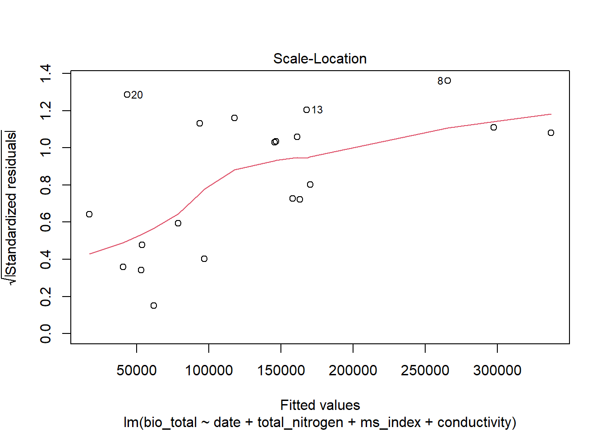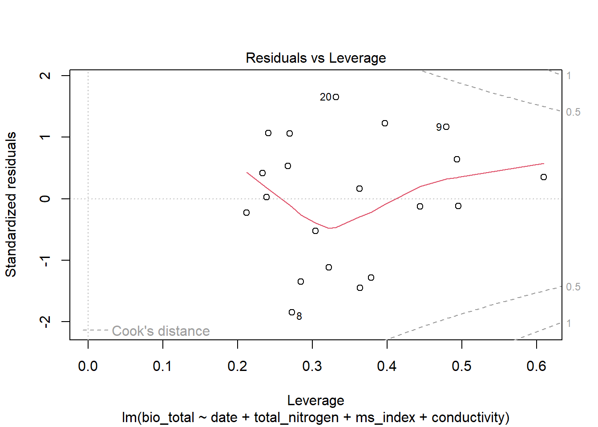
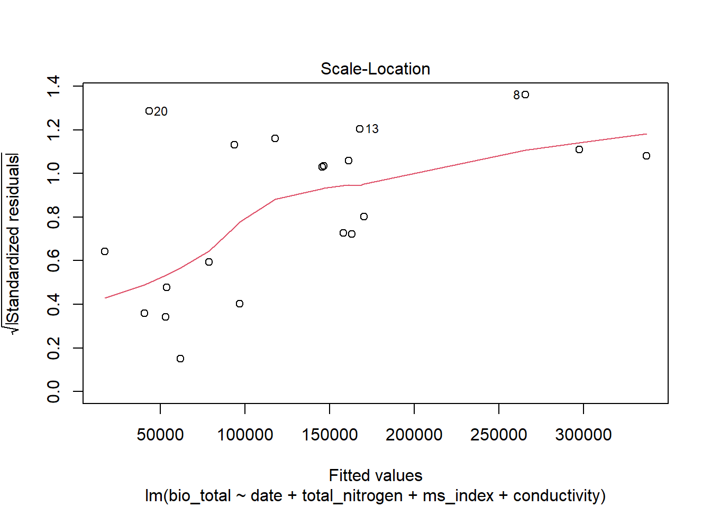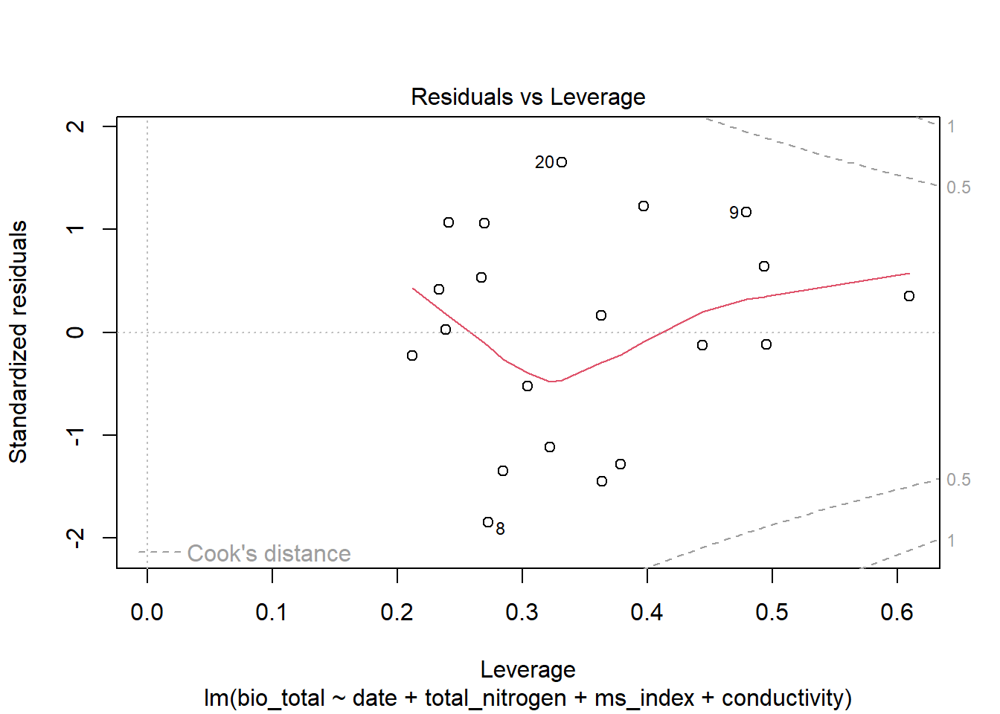
 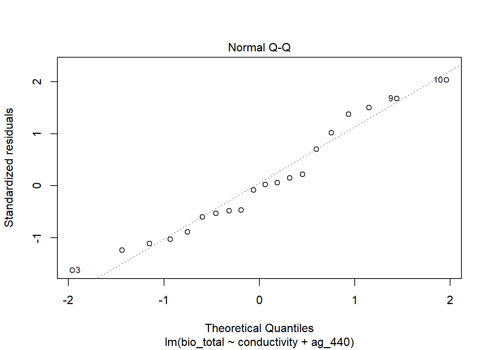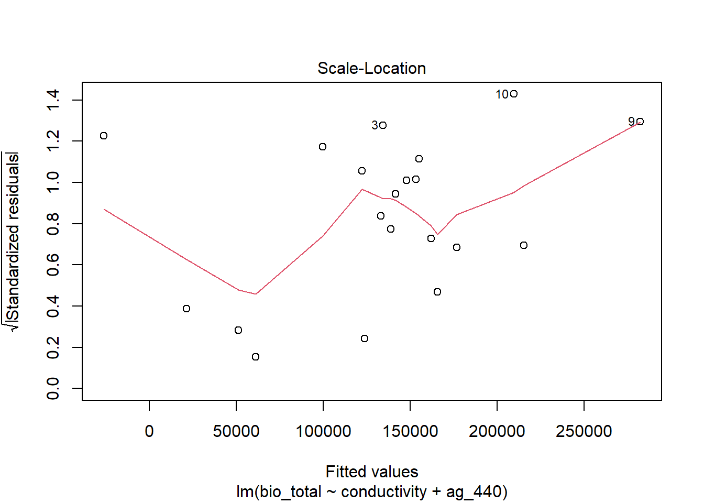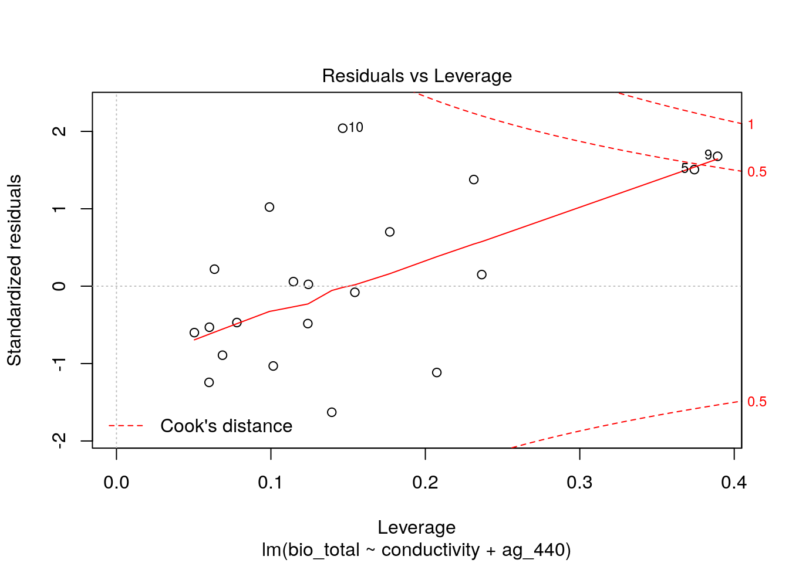
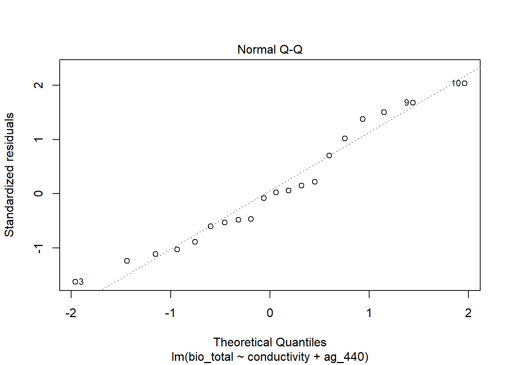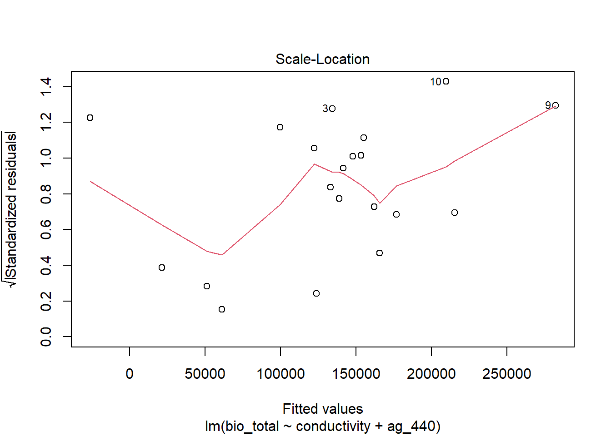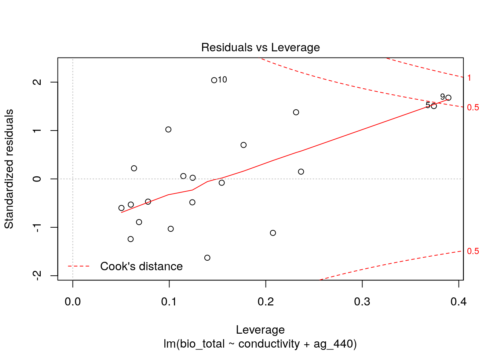
Finalmente, si los supuestos se rechazan, una posible opción es realizar un test no paramétrico, como por ejemplo regresiones lineales por permutaciones.
2.6 A modo de conclusión
¿Cuál es el mejor modelo? El modelo_fecha4 tiene mayor poder explicativo, pero incluye la fecha de muestreo (que quizás deberíamos incluir en otro tipo de modelo que considere que hay lagunas repetidas). Sin considerar la fecha de muestreo, un buen modelo es el modelo_conduct2: explica más del 50% de la variabilidad en un estudio no experimental, limnológico, a campo (aunque deberíamos discutir si estas variables están muy correlacionadas entre sí). En cualquier caso, el método de selección manual nos dio un conocimiento importante de nuestros datos y nos permitió evaluar las interacciones paso a paso. El procedimiento de selección de variables que vimos en esta Unidad puede ser aplicado a otros tipos de modelos lineales (GLM, GLMM, modelos con estructura de varianzas o modelos no paramétricos).
Como se señaló anteriormente, en este caso de estudio hay medidas repetidas, que podríamos (o deberíamos) considerar en el análisis, incluyendo factores aleatorios como por ejemplo la identidad de las lagunas. Además –y especialmente si tenemos un conjunto grande de cuerpos de agua muestreados–, podemos considerar modelos más complejos que incluyan un componente espacial: ¿la biomasa de las bacterias heterótrofas de las lagunas más cercanas se parece más entre sí?
La mejor manera de entrenarse en este análisis es probando con datos propios. ¿El o los modelos que ajusté tienen sentido biológico?